Newcastle 교환학생 가이드북 호주 · 한 학기
숲이 많은 캠퍼스에서 수업을 듣고, 시내에 나가 해변과 항구를 걷는 호주 교환학생 생활을 다룬다. 학교와 동네의 일상, 성·정체성·관계 관련 수업, 둘이 지낼 숙소와 한 학기 비용을 차례로 살펴본다.
사진을 누르면 크게 볼 수 있고, 과목 설명과 자세한 자료는 눌러서 펼쳐 읽으면 된다. 작은 [숫자]는 출처가 아니라 용어 설명과 곁가지 정보다.
1. 뉴캐슬은 어떤 곳인가목차로
University of Newcastle는 호주 뉴사우스웨일스주 뉴캐슬에 있는 대학이다. 이름이 비슷한 영국의 Newcastle University가 아니라 호주 뉴캐슬대를 다룬다. 생활은 숲이 많은 칼라한 캠퍼스와, 해변·항구가 있는 도심 두 곳을 중심으로 돌아간다.
심리학을 공부하면서 호주 해안도시에서 한 학기를 보내고, 둘이 같은 스튜디오에 사는 숙소도 신청할 수 있는 학교다. 성·젠더 관련 과목도 있지만, 직접 관련된 심리 과목은 온라인 수업이다. 그래서 캠퍼스에서는 사회심리·개인차·발달 같은 심리 과목과 인문사회 과목으로 넓혀 듣는 구성이 현실적이다.
| 살펴볼 점 | 현재 확인한 내용 |
|---|---|
| 전공과 수업 | 심리학 학위와 Gender and Sexuality Studies 부전공이 있다. 부전공에 속한 모든 과목이 매년 열리는 것은 아니다. |
| 성·정체성·관계 | PSYC1800은 성·젠더·섹슈얼리티 모듈을 명시한다. PSYC2800은 젠더·트랜스젠더 심리학을 선택 주제 예시로 둔다. |
| 둘이 지내기 | Barahineban 스튜디오·타워 1베드룸의 2인 거주 선택지가 있다. 두 사람 모두 신청하고 서로를 지명하며 배정 결과를 받아야 한다. |
| 선발 이력 | 단국대 2026년 2학기 모집에서는 최초·2차·3차에 각각 2명이 표기되었다. 경쟁이 낮았던 근거로 볼 수 있다. |
| 생활 범위 | 칼라한 본교는 해변과 떨어져 있다. 시내를 오갈 때 무료 셔틀과 버스·열차를 조합한다. |
자료: 대학 캠퍼스 안내 · 심리학 학위 2027 · Gender and Sexuality Studies 2027
2. 캠퍼스에서 생활하기목차로
수업이 열리는 건물부터 보면 뉴캐슬의 하루가 그려진다. 칼라한(Callaghan)의 숲과 기숙사를 중심으로 지낼 수도 있고, 도심(City)의 강의실과 항구를 오가며 지낼 수도 있다. 과목마다 열리는 캠퍼스가 다르니 시간표와 숙소를 함께 정하자.
칼라한 | 강의동과 도서관 사이를 걷는 본교
칼라한은 도심에서 북서쪽으로 약 12km 떨어진 넓은 캠퍼스로, 학교 안내로는 부지가 140헥타르가 넘는다. 교환학생이 듣는 과목 대부분과 교내 기숙사가 여기에 있다. 강의실, Auchmuty Library, Shortland Building, 기숙사와 운동시설이 숲 사이에 흩어져 있어서 같은 캠퍼스 안에서도 수업 전후로 꽤 걷게 된다.
도서관에서 과제를 하고 Shortland Building에서 점심을 먹으면 하루를 캠퍼스 안에서 다 보낼 수 있다. 운동시설 The Forum에는 실내 50m 수영장이 있고, Bar on the Hill에서는 캠퍼스 공연과 학생 행사가 열린다. 식사 공간과 수영장 이용 조건은 시설별 안내에서 확인하자.
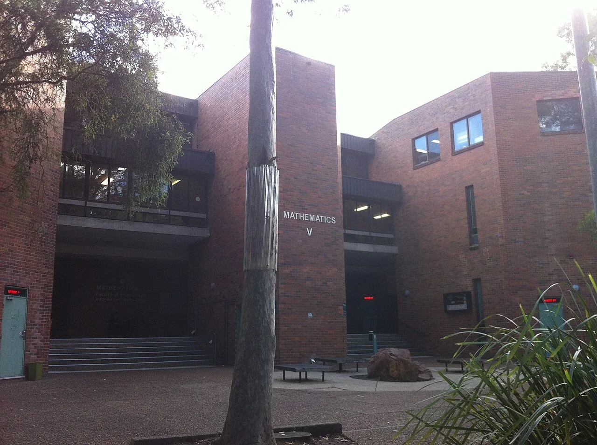
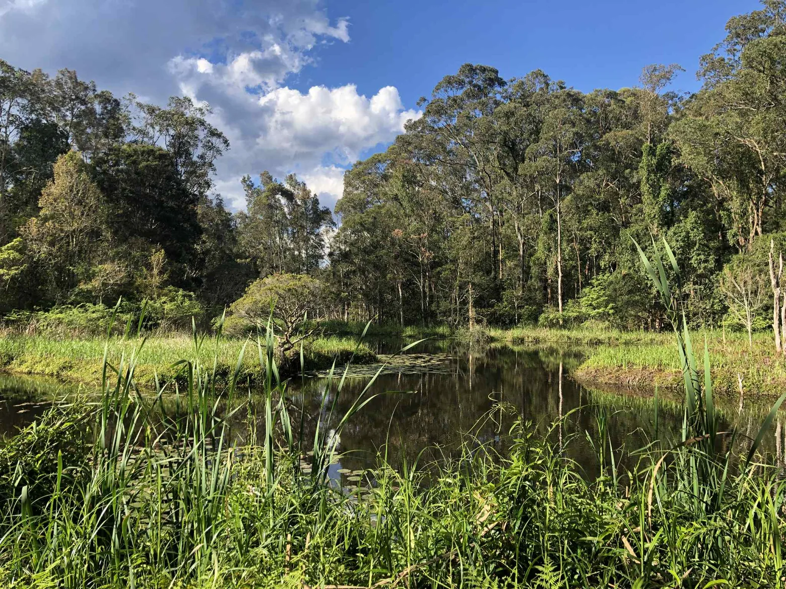
자료: University of Newcastle 칼라한 캠퍼스 · 대학 뉴캐슬 캠퍼스 위치와 교통 안내 · 교환학생 팩트시트의 캠퍼스·이동 안내 · NUspace·칼라한 셔틀 운행 시간과 노선 · 학생용 전자레인지·정수 시설과 식사 안내 · 대학 The Forum 운동시설 안내 · 칼라한 Bar on the Hill 공연장 안내
뉴캐슬 시티 | Civic역과 항구 사이에 흩어진 강의동
City 캠퍼스는 시내 여러 대학 건물을 한데 묶어 부르는 이름이다. Hunter Street의 NUspace는 Civic 경전철 정류장 바로 앞에 있고, 도서관 서비스·학습 공간·강의실이 있다. 항구 쪽 Honeysuckle의 Q Building에는 창작산업 교육·제작 시설이 있다. University House와 음악원(Conservatorium of Music)도 같은 도심에 있다.
NUspace에서 오전 수업을 마치면 Civic Park, Newcastle Museum, Honeysuckle 수변까지 걸어서 갈 수 있다. 반대로 두 캠퍼스를 오가는 날에는 시내 건물 사이를 걷는 시간과 칼라한행 셔틀을 기다리는 시간이 따로 든다. 시간표에 'City'라고만 적지 말고 실제 건물 이름과 입구까지 적어 두면 첫날 길 찾기가 쉽다.
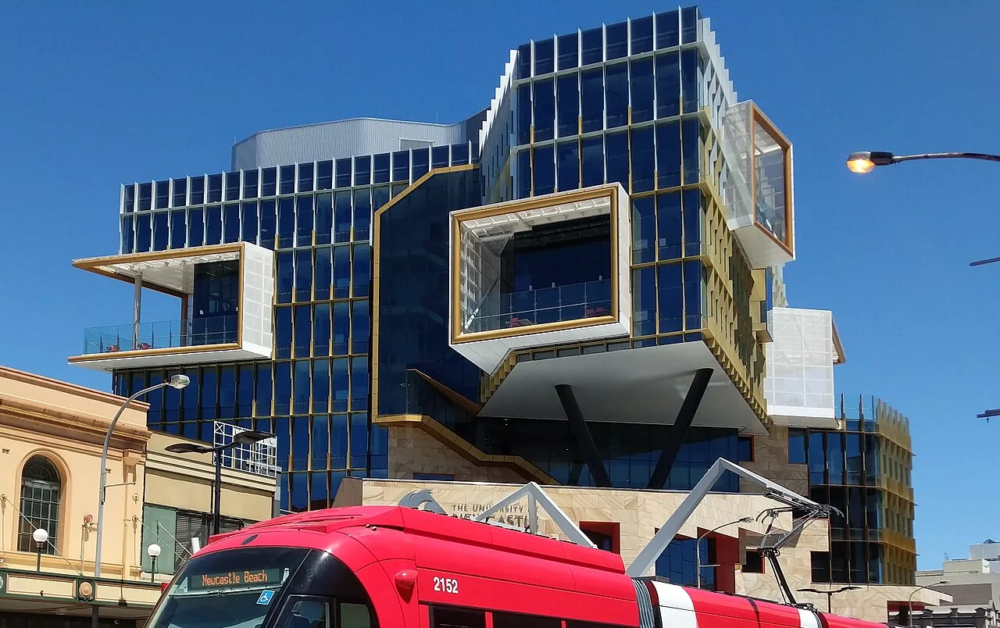
자료: University of Newcastle 뉴캐슬 시티 캠퍼스 · NUspace 건물의 강의·학습 공간 · Honeysuckle의 Q Building과 교육 시설 · 시티 캠퍼스의 대중교통 정류장 · Visit Newcastle 도심·해안 생활권 안내 · 교환학생 팩트시트의 캠퍼스·이동 안내
과목이 두 캠퍼스에 있을 때
학교의 교환학생 안내 자료(팩트시트)는 칼라한과 시티 과목을 섞어 들을 수 있다고 하고, 두 캠퍼스 사이 버스 이동을 약 20분으로 소개한다. 실제로는 기숙사나 강의실에서 정류장까지 걷는 시간, 버스를 기다리는 시간, 내려서 걷는 시간이 더 붙는다. 연달아 있는 수업을 두 캠퍼스에 나눠 넣으면 버스 한 대만 놓쳐도 다음 수업에 늦을 수 있으니, 되도록 하루 수업은 한 캠퍼스에 모으자.
팩트시트에는 센트럴코스트의 Ourimbah 캠퍼스도 나온다. 하지만 뉴캐슬에서 한 시간쯤 떨어져 있어서, 학교도 뉴캐슬에 사는 교환학생에게는 그곳 과목을 권하지 않는다. 시간표에서 Callaghan, Newcastle City, Ourimbah 표기를 잘 구분하자.
3. 교통·장보기·식사목차로
평일 칼라한 ↔ 도심 | 무료 NUspace 셔틀
학교가 운영하는 무료 셔틀은 학생증을 찍고 탄다. 지금 안내로는 학기 중 평일엔 약 30분, 시험 기간과 방학엔 약 한 시간 간격으로 다니고, 주말엔 운행하지 않는다. 학생 포털 myUni의 Shuttles 메뉴에서 실시간 위치와 정류장을 볼 수 있다. 학교는 출발 예정 10분 전까지 정류장에 나와 있으라고 안내한다.
칼라한 기숙사 근처 정류장에서 셔틀을 타고 도심 수업에 가거나, 돌아오는 길에 Marketown에 내려 장을 볼 수 있다. 셔틀 시간표에는 방향별 정류장 순서가 나온다. 학교가 말하는 '약 20분'에 배차 간격과 걷는 시간까지 더하면, 두 캠퍼스 수업 사이에는 45~60분 정도를 비워 두는 게 좋다. 이 숫자는 정류장 위치와 수업 끝나는 시각을 고려해 이 가이드에서 잡은 예시다.
자료: NUspace·칼라한 셔틀 운행 시간과 노선 · 교환학생 팩트시트의 캠퍼스·이동 안내
주말과 야간 | Hunter선·시내버스·경전철
도심의 뉴캐슬 인터체인지(Newcastle Interchange)에서 Hunter선을 타면 Warabrook역까지 간다. Warabrook역은 칼라한 캠퍼스 가장자리에 있어서, 학교 안내로는 많은 강의동까지 걸어서 10~15분쯤이다. 버스 정류장에서 가까운 강의동이라면 시내버스가 더 편할 수도 있다. 교통청 길찾기 Trip Planner에서는 목적지를 'University of Newcastle'로만 넣지 말고 실제 건물이나 정류장 이름으로 검색하자.
도심에는 Newcastle Interchange에서 Newcastle Beach까지 가는 경전철이 다닌다. Civic에서 내리면 NUspace, 박물관, Civic Theatre에 갈 수 있고, 종점 Newcastle Beach에 내리면 바로 해변이다. 캠퍼스 셔틀이 쉬는 주말에는 이 경전철과 Hunter선, 버스를 이어서 다니면 된다.
학교의 Security Night Shuttle은 칼라한과 Jesmond, Shortland, Birmingham Gardens, Waratah West 일부를 잇는, 전화로 부르는 야간 서비스다. 지금 안내로는 18:30~01:00에 운영하고, 02 4921 5888로 전화해 3번을 누르면 된다. 캠퍼스 근처에서 밤 수업을 마치는 날에는 가려는 곳이 운행 범위 안인지 확인하자. 도심 공연을 보고 돌아오는 날엔 일반 대중교통 막차부터 확인하자.
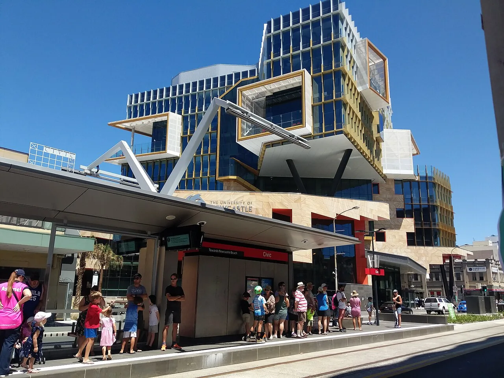
자료: 칼라한의 Warabrook역과 버스 안내 · NUspace·칼라한 셔틀 운행 시간과 노선 · Transport for NSW 뉴캐슬 인터체인지 노선 · 뉴캐슬 경전철 노선과 운행 시간 · Transport for NSW 공식 경로 검색
결제 | 성인 Opal과 비접촉 카드
뉴캐슬의 NSW 대중교통은 성인용 Opal 카드나, 결제를 지원하는 비접촉 카드·휴대폰 같은 기기로 탈 수 있다. 탈 때와 내릴 때 같은 카드나 기기를 찍어야 한다. NSW 대학생 교통 할인은 따로 자격이 있는데, 국제학생은 공식 안내에 적힌 일부 호주 장학 프로그램 대상자 같은 예외만 받을 수 있다. 일반 교환학생은 성인 요금으로 교통비를 잡자.
자료: Transport for NSW Opal 운임과 결제 안내 · NSW 대학생 교통 할인 대상
기숙사에서 요리할 때
학교가 칼라한 학생에게 안내하는 가장 가까운 쇼핑센터는 Jesmond Central이다. 안에 있는 Woolworths에서 식재료와 세제를 한 번에 살 수 있다. 첫 장보기는 쌀이나 파스타, 달걀, 과일, 식용유처럼 여러 끼니에 두루 쓰는 식재료와 주방 소모품 위주로 나눠 사면 들고 오기 편하다.
International House는 직접 해 먹는 것을 기본으로 하는 기숙사라 아파트마다 공용 주방이 있다. 다른 기숙사는 방 유형에 따라 주방이 있는지, 식사가 나오는지가 다르다. 공용 주방에서는 냉장고 칸과 식기 둘 곳을 먼저 정하고, 냄비·그릇처럼 실제로 갖춰진 물건을 확인한 뒤 장을 보자.
자료: 대학 국제학생 장보기와 국제 식품점 안내 · Jesmond Central Woolworths 매장 · International House 공용 주방과 기숙사 시설 · 대학 기숙사의 식사와 조리 옵션
도심에서 장보고, 캠퍼스에서 도시락 데우기
시티 캠퍼스 근처에서 크게 장을 볼 곳은 Newcastle West의 Marketown이다. Coles와 Woolworths가 다 있고, 무료 캠퍼스 셔틀도 이 쇼핑센터 앞을 지난다. 시내 수업 뒤에 장을 본다면 돌아가는 셔틀 정류장과 막차를 먼저 확인하자. 일반 마트에 없는 재료는 학교 국제학생 안내에 있는 아시아·세계 식품점 목록에서 찾을 수 있다.
칼라한의 Shortland Building과 Auchmuty Information Common, 시티의 NUspace 1층에는 학생이 쓸 수 있는 전자레인지와 정수기가 있다. 전날 만든 밥이나 파스타를 싸 오면 오전·오후 수업 사이에 굳이 캠퍼스 밖으로 나가지 않아도 된다.
학생회 UNSA는 학생 회원에게 Free Lunch, Food Hub, Pantry 같은 식품 지원 프로그램을 운영한다. NUspace에서도 무료 점심 행사가 열린 적이 있고, 칼라한에서는 Shortland Building의 UNSA 사무실(UNSA HQ)에서 일부 식품 지원을 받을 수 있다. 장소와 요일은 학기마다 바뀌니 행사표를 확인하자.
자료: 대학 국제학생 장보기와 국제 식품점 안내 · Marketown 쇼핑센터 입점 안내 · NUspace·칼라한 셔틀 운행 시간과 노선 · 학생용 전자레인지·정수 시설과 식사 안내 · UNSA 무료 식품 및 점심 지원 · NUspace 무료 점심 행사 기록
4. 해변과 도시에서 보내는 쉬는 날목차로
도심에서는 경전철 종점 Newcastle Beach에서 바다 쪽으로 걸어가면 된다. 뉴캐슬 해안에는 모래사장, 파도가 들이치는 바위 웅덩이, 계단이 놓인 해안 산책로, 바닷물을 쓰는 수영장이 이어져 있어서 하고 싶은 것에 따라 장소를 고를 수 있다.
뉴캐슬 비치·노비스 | 수업 뒤 짧게 가는 해변
Newcastle Beach는 경전철로 가기 쉬운 도심 해변이다. Nobbys Beach 쪽에서는 모래사장에서 등대가 있는 곶을 바라볼 수 있다. 서핑이 처음이라면 Visit Newcastle이 소개하는 Newcastle Surf School 같은 강습에서 장비, 수업 장소, 파도 상태를 확인하고 시작하면 된다.
수영은 구조요원이 꽂아 둔 빨강·노랑 깃발 사이에서만 하자. 구조요원이 지키는 해변과 시간은 계절마다 바뀐다. 시청의 순찰 일정에서 그날 지키는 해변을 확인하고, 현장 표지판과 구조요원 안내를 따르자.
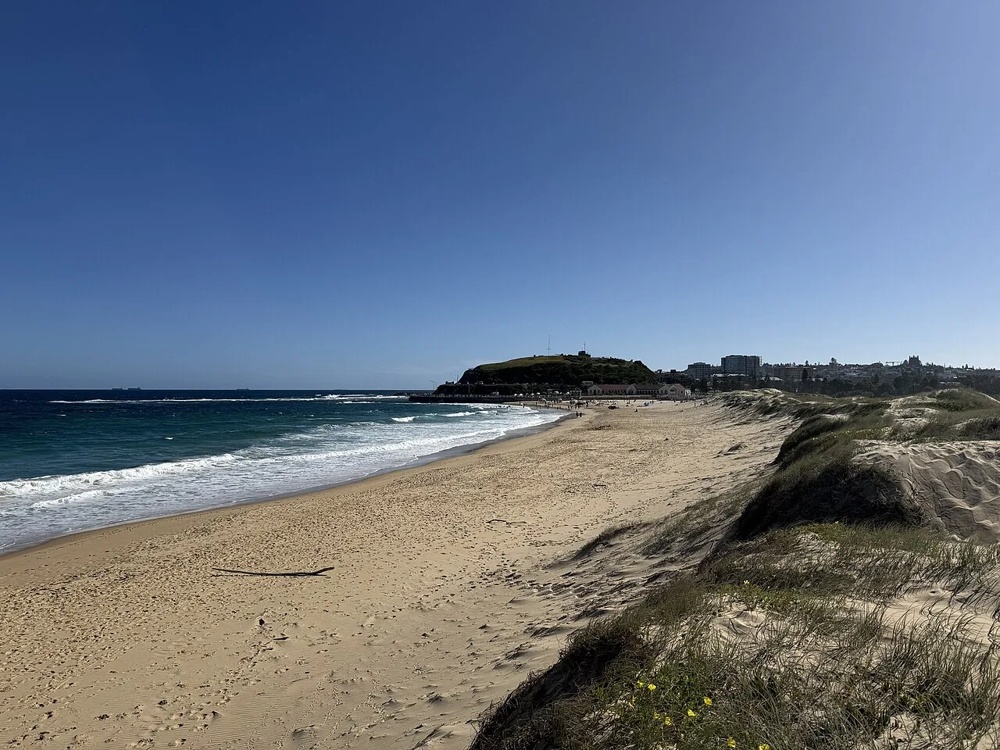
자료: 뉴캐슬 경전철 노선과 운행 시간 · 뉴캐슬 시청 해변·해수 수영장 안내 · 뉴캐슬 시청 해변 순찰과 수영장 운영 · Visit Newcastle의 서핑 강습 안내
오션 배스 | 바다 옆에서 길이를 정해 수영하기
Newcastle Ocean Baths와 Merewether Ocean Baths는 바닷물을 쓰는 해안 수영장이다. 파도 치는 바다에서 헤엄치는 것과 달리 수영장 경계가 눈에 보인다. 시청 안내로는 둘 다 청소·정비 일정에 맞춰 일 년 내내 연다. 해변 순찰과는 운영 방식이 다르니, 가기 전에 시청 사이트에서 시설 상태를 확인하자.
Bogey Hole은 King Edward Park 아래 바위를 깎아 만든 오래된 해수 웅덩이다. 들어가는 길이 좁고 파도를 그대로 맞는 지형이라, 바다가 거친 날에는 산책길 위에서 내려다보기만 하자.
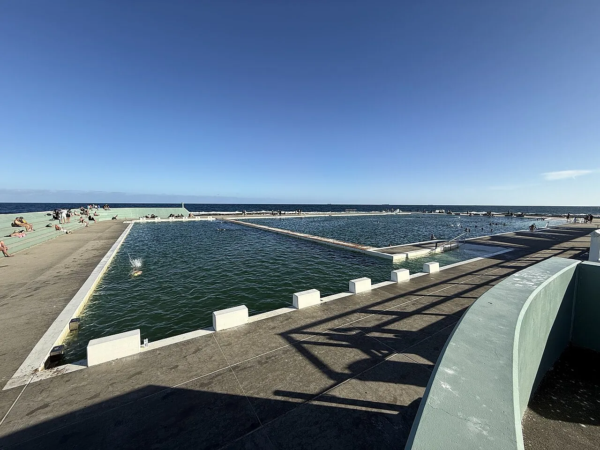
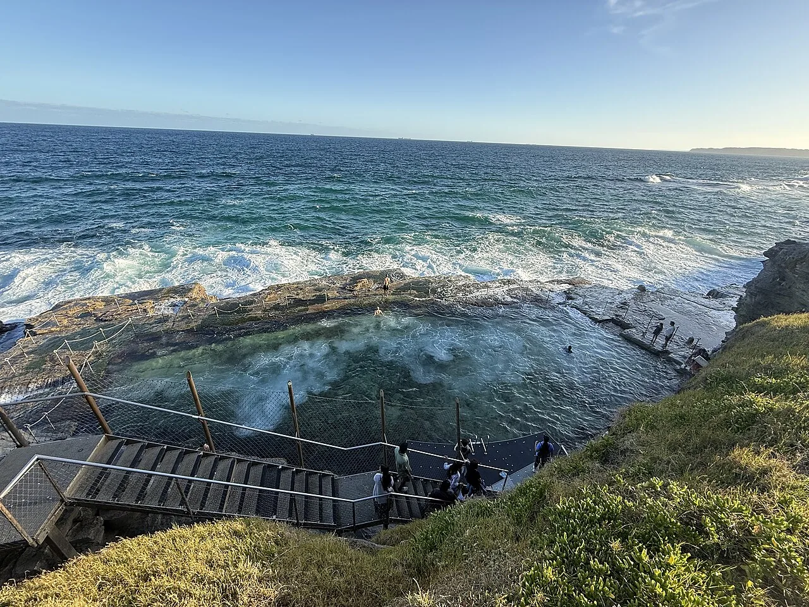
자료: 뉴캐슬 시청 오션 배스 시설 안내 · 뉴캐슬 시청 해변 순찰과 수영장 운영 · Visit Newcastle 도심·해안 생활권 안내 · 시청 Bathers Way 해안길 안내
Bathers Way | 한 번에 걷거나 여러 번 나눠 걷기
Bathers Way는 Nobbys Beach에서 Merewether Ocean Baths까지 이어지는 약 6km 해안길이다. 처음엔 Nobbys–Newcastle Beach–Ocean Baths처럼 짧게 걷고, 다른 날 Strzelecki Lookout에서 Memorial Walk를 따라 Bar Beach 쪽으로 이어 걸어 보자.
Memorial Walk에서는 절벽 아래로 Bar Beach와 바다가 내려다보인다. 오르막·내리막이 있고 바닷바람을 그대로 맞는 길이다. 해 질 무렵에 걷는다면 얼마나 걸을지와 돌아올 교통편을 미리 정해 두자.
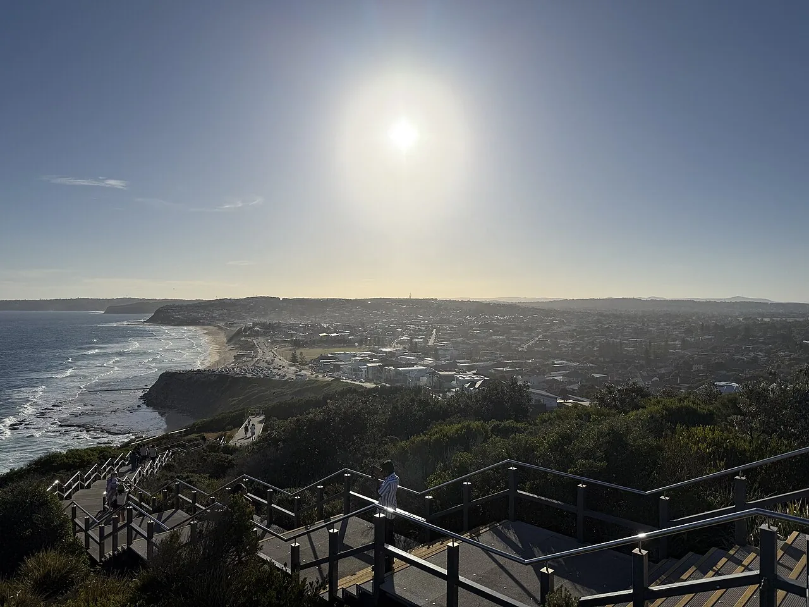
자료: 시청 Bathers Way 해안길 안내 · Visit Newcastle 도심·해안 생활권 안내
Civic에서 박물관과 미술관 사이
Newcastle Museum은 Honeysuckle의 옛 철도 작업장 건물에 있다. 무료 상설전에서 뉴캐슬의 자연과 생활사, 헌터 지역의 철강·산업 역사, 직접 해 보는 과학 전시를 볼 수 있다. Civic 경전철역에서 Museum Park를 지나 들어가면 된다.
Civic Park 옆의 Newcastle Art Gallery는 확장 공사를 마치고 2026년 2월에 다시 문을 열었다. 도심 수업 사이에 시간이 비는 날, 공원과 갤러리를 묶어 들르기 좋다. 맑은 날엔 박물관에서 Honeysuckle 수변을 따라 걷거나, Queens Wharf에서 페리를 타고 항구 건너편 Stockton에 다녀올 수도 있다.
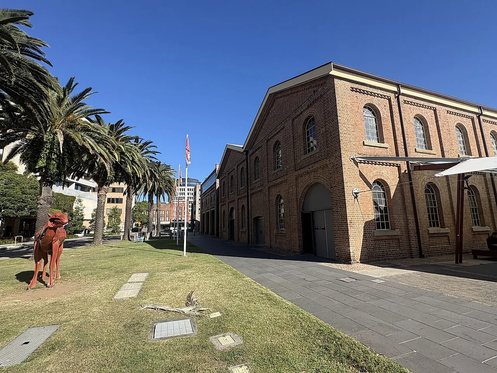
자료: Newcastle Museum 관람 안내 · Newcastle Art Gallery 확장·재개관 · Visit Newcastle 도심·해안 생활권 안내 · Queens Wharf–Stockton 페리 노선
공연은 캠퍼스, 극장, 동네 공연장으로 나뉜다
칼라한에서 음악 공연이나 학생 행사를 보려면 Bar on the Hill 일정을 보면 된다. 도심에서는 NUspace 맞은편 쪽에 있는 Civic Theatre와 대학 음악원(Conservatorium) 공연 일정을 확인할 수 있다. Hamilton의 Beaumont Street에는 밴드 공연을 하는 동네 공연장도 있다.
Newcastle East의 The Lock-Up은 현대미술 전시 공간이다. 비가 오거나 파도가 거친 날엔 도심 전시나 공연으로 일정을 바꾸면 된다. 공연과 축제는 해마다 날짜가 다르니 그해 공식 프로그램에서 확인하자.
자료: 칼라한 Bar on the Hill 공연장 안내 · Civic Theatre Newcastle 공연 일정 · 대학 Conservatorium of Music 안내 · Visit Newcastle 뉴캐슬 라이브 음악 안내 · The Lock-Up 동시대 미술 공간
시드니 | 아침에 출발해 하루를 쓰는 도시 나들이
Newcastle Interchange에서 Central Coast & Newcastle선을 타면 시드니 중앙역(Sydney Central)까지 간다. 열차와 정차역에 따라 걸리는 시간이 다르다. 왕복에 하루의 꽤 많은 시간이 들어가니, 시드니에서는 한두 구역만 골라 일정을 짜는 게 현실적이다.
예를 들어 중앙역에서 도심으로 가서 박물관이나 전시 한 곳을 보고, Circular Quay 주변을 걷다 돌아올 수 있다. 주말에 선로 공사가 있으면 대체 버스나 환승이 생길 수 있으니, 출발 전에 가는 길과 오는 길을 따로 확인하자.
자료: Transport for NSW 뉴캐슬 인터체인지 노선 · 시드니행 Central Coast & Newcastle선 · Transport for NSW 공식 경로 검색
헌터 | 기차로 닿는 Maitland와 포도밭이 있는 Pokolbin
Hunter선을 타면 Maitland 쪽으로 갈 수 있다. Maitland에서는 지역 미술관(Maitland Regional Art Gallery)과 강가의 중심가를 이어서 걸을 수 있고, 옛 강변 마을 Morpeth까지 가려면 지역 버스나 차편을 확인하자.
와이너리가 모인 Pokolbin·Lovedale 일대(헌터밸리)는 가 볼 곳들이 넓게 흩어져 있다. 시내처럼 버스를 수시로 갈아탈 수 없으니, 한 곳에서 다음 곳으로 어떻게 옮길지까지 정하고 출발하자. 차 없이 여러 와이너리를 돌 생각이면 뉴캐슬 출발 투어나 교통편이 포함된 일정을 비교해 보자.
자료: NSW 광역 철도망과 Hunter선 · Visit NSW Maitland 여행 안내 · Visit NSW Morpeth 여행 안내 · Visit NSW 헌터밸리 교통 안내 · Visit NSW Pokolbin 포도밭과 명소 안내
Port Stephens | 다른 해안 풍경을 보러 가는 날
Newcastle Interchange에서 Nelson Bay·Fingal Bay 방향 버스를 탈 수 있다. 해안 산책이나 Tomaree 일대 전망대에 가려면 출발 전에 공원 산책로 공지, 내릴 정류장, 돌아오는 버스를 확인하자. 버스 시간에 맞춰 움직여야 해서, 시내에서 해변에 잠깐 다녀오는 날과는 하루 흐름이 다르다.
5. 학기·계절·날씨목차로
호주는 남반구라 한국과 계절이 반대다. 한국 1학기 파견은 호주의 늦여름~가을, 2학기 파견은 늦겨울~봄이다. 헷갈리지 않도록 이 가이드의 과목 필터에는 Semester 1·2와 실제 월을 함께 적었다.
| 파견 시기 | 2028년 공식 학사력 | 생활의 계절 |
|---|---|---|
| 한국 1학기 / Semester 1 | 2월 21일 개강 · 5월 19일 수업 종료 · 5월 22일부터 시험 | 2월 더운 여름 끝 → 3~5월 가을 → 귀국 무렵 초겨울 |
| 한국 2학기 / Semester 2 | 8월 14일 개강 · 11월 10일 수업 종료 · 11월 13일부터 시험 | 8월 늦겨울 → 9~11월 봄 |
| Midyear Session | 2028년 6월 19일~7월 28일 수업 · 7월 31일부터 시험 | 학기 사이 별도 수업 기간. 한 학기 교환에 자동으로 포함되지 않는다. |
2028년 학사력은 나와 있지만 과목별 2028년 개설표는 따로 나오며 아직 공개되지 않았다. 그래서 아래 과목 사전은 2025~2027년 기록을 보여 준다. 시험 시작일을 귀국일로 잡지 말고, 실제 시험 일정과 기숙사 계약 종료일을 같이 보자.
2027년 자료를 읽을 때 달라진 날짜
지금 수강신청 일정에는 2027년 Semester 1이 2월 22일 개강, 5월 21일 수업 종료, 5월 24일~6월 5일 시험으로 나온다. 2026년 4월에 만든 학사력 PDF에 있던 5월 14일·17일보다 늦춰진 것이다. 예전 브로슈어의 1월 개강이나 7월 Semester 2 개강을 최신 학기에 그대로 적용하지 말자.
자료: 2028년 공식 학사력 · 현재 수강·시험 일정 · 비교용 2027 초기 학사력 · 학사력 변경 안내
2~5월 | 반소매로 시작해 저녁 겉옷을 더하는 학기
2~3월엔 낮 최고기온이 평균 25°C 안팎이다. 수업 끝나고 해변에 들르거나 해 질 무렵 물가를 걷기 좋은 때다. 4~5월엔 낮 기온이 천천히 내려가고 밤이 먼저 쌀쌀해진다. 도서관에서 늦게 돌아오는 날이나 바람 부는 해안을 걸을 땐 긴바지와 얇은 겉옷이 필요하다.
자료: 호주 기상청 뉴캐슬 Nobbys 장기 기후 통계 · 시청 Bathers Way 해안길 안내
8~11월 | 서늘한 등교부터 따뜻한 해변 산책까지
8월엔 평균 최저기온이 9.3°C다. 아침 일찍 셔틀을 기다릴 땐 얇은 옷을 겹쳐 입고, 낮에 벗을 수 있는 겉옷을 챙기자. 10~11월엔 낮 최고기온이 평균 22~24°C까지 오른다. 관측 기록상 일 년 내내 비 오는 달이 이어지니, 어느 학기든 가방에 접는 우산이나 얇은 방수 겉옷을 넣어 다니면 건물 사이를 오가기 편하다.
자료: 호주 기상청 뉴캐슬 Nobbys 장기 기후 통계
호주 기상청 뉴캐슬 Nobbys Signal Station의 장기 관측 평균이다. 바닷가 관측소 자료다.
| 월 | 평균 최고 | 평균 최저 |
|---|---|---|
| 2월 | 25.4°C | 19.4°C |
| 3월 | 24.8°C | 18.4°C |
| 4월 | 22.8°C | 15.4°C |
| 5월 | 20.1°C | 12.0°C |
| 6월 | 17.6°C | 9.8°C |
| 7월 | 16.9°C | 8.5°C |
| 8월 | 18.1°C | 9.3°C |
| 9월 | 20.3°C | 11.6°C |
| 10월 | 22.2°C | 14.1°C |
| 11월 | 23.6°C | 16.2°C |
6. 젠더 지원과 커뮤니티목차로
학생 모임, 학교 지원, 학적 기록, 화장실, 진료는 각각 맡은 곳이 다르다. 처음 사람을 만나고 싶을 때와 학교에 표시되는 이름을 바꾸고 싶을 때 연락할 곳을 나눠서 정리했다.
UNSA Queer Guild | 학생이 운영하는 모임
학생회 University of Newcastle Students’ Association의 지금 약칭은 UNSA다. 학교 안내 일부에서 Queer Collective라고 부르는 학생 모임을 학생회 사이트에서는 Queer Guild라고 부른다. LGBTQIA+로 정체화했거나 자기 정체성을 알아 가는 중인 학생이 모이는 학생 주도 모임이고, 재학생은 무료로 가입할 수 있다. 처음 참여하는 방법이나 다음 행사 장소는 Queer Officer 이메일(UNSA-QEO@newcastle.edu.au)이나 모임 채널로 물어보면 된다.
2026년 Pride Week에는 칼라한의 큰 잔디밭(Great Lawn)에서 피크닉, 옷 교환, 드래그 빙고 등이 열렸고, 도심 NUspace에서도 도서관 메이커 스페이스에서 Pride Craft 행사가 있었다. 행사표에서 캠퍼스와 건물을 보면 내 수업이 있는 캠퍼스에서 참여할 수 있다. 2027년 날짜는 그해 공지를 보자.
캠퍼스 밖에서는 지역 단체 Newcastle Pride의 프로그램이 따로 있다. 대학 Pride Week와는 별개로 운영되고, 뉴캐슬시 관광 사이트에도 항구 프라이드 크루즈 같은 지역 행사가 올라온다.
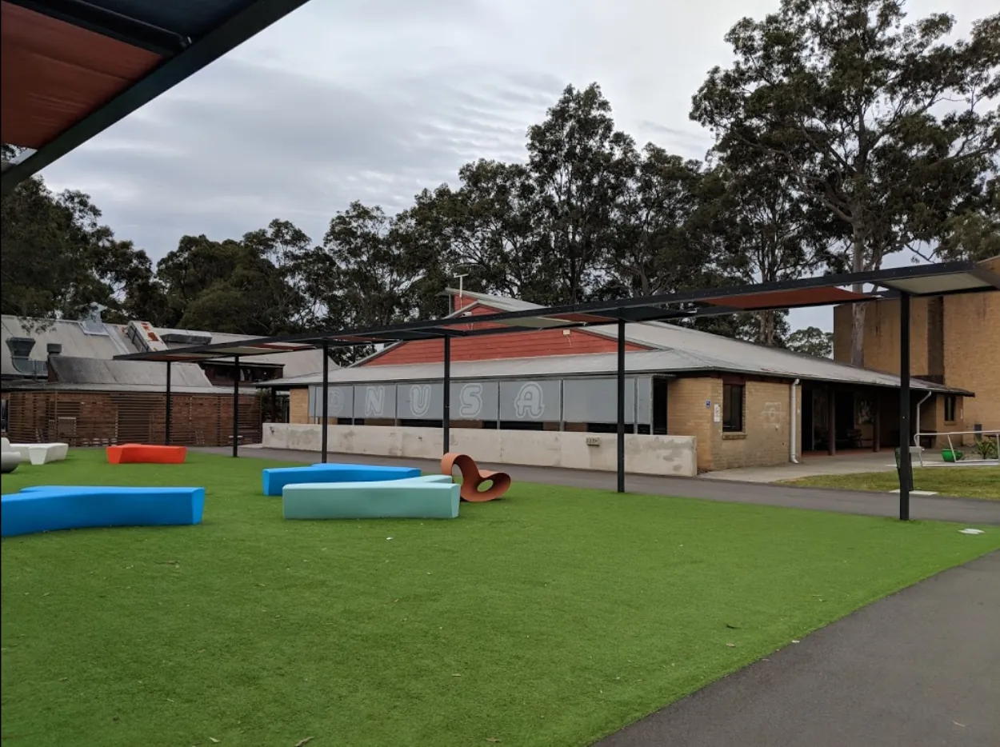
자료: 대학의 성별 다양성과 성적 지향 지원 · UNSA Equity Guilds와 Queer Guild 가입 안내 · AskUON 성별 항목 변경과 Queer Guild 연락처 · 2026년 UNSA Pride Week 행사와 캠퍼스별 장소 · UNSA Queer Officer와 Queer Guild 역할 · 지역 단체 Newcastle Pride의 행사와 소식 · Visit Newcastle 시내 행사 일정
ALLY Network | 교직원 안내와 서비스 연결
학교의 LGBTIQ+ ALLY Network는 교육을 받은 구성원이 학내에서 처음 이야기를 들어 주고 알맞은 서비스로 연결해 주는 네트워크다. 친구나 모임을 찾을 땐 Queer Guild에, 이름·기록·지원 제도를 어디에 물어야 할지 모를 땐 Find an ALLY 목록이나 다양성·포용 담당(Equity, Diversity and Inclusion, edi@newcastle.edu.au)에 연락하면 된다.
자료: 대학의 성별 다양성과 성적 지향 지원 · 대학의 캠퍼스별 LGBTIQ+ ALLY 찾기 · 대학 EDI의 LGBTIQ+ 지원 안내
이름, 대명사, 학생증과 학교 기록
학교의 Student Name Policy에 따르면 학생은 원하는 이름과 대명사를 써 달라고 요청할 수 있고, 학교는 가능한 범위에서 반영을 검토한다. 성별 정체성에 맞게 실제로 쓰는 이름(chosen name)을 학생증에 넣고 싶다면 AskUON으로 신청한다. 다만 성적증명서나 학위증 같은 공식 문서에는 법적 이름이 쓰인다.
학교 시스템의 성별 항목은 AskUON의 Personal Details에서 바꿀 수 있다. 학교는 이 항목이 호주 고등교육 통계로 보고된다고 안내한다. 출석부, 학생증, 메일 주소처럼 이름이 보이는 곳이 궁금하면 어느 화면인지 콕 집어 AskUON에 물어보고, 수업에서 불러 줬으면 하는 이름과 대명사는 필요한 강의 담당자에게 따로 알리면 된다.
자료: 대학 Student Name Policy 원문 · AskUON 성별 항목 변경과 Queer Guild 연락처
All-gender 화장실 | 실제로 찾을 수 있는 방 번호
칼라한에서는 Student Services Building SC-121, Auchmuty Library L-251·L-306, Shortland Building US-232·US-311 등이 공식 목록에 있는 포용 화장실(성별 구분 없는 화장실)이다. 도심 NUspace에서는 지상층 X-G10과 1층 도서관 X-119를 포용 화장실로 안내하고, 두 곳은 접근성(장애인) 화장실도 겸한다.
첫 수업 전에 학교 지도 MazeMap에서 건물 이름과 방 번호를 찾아 두면 강의실에서 가까운 화장실 위치를 미리 알 수 있다. 캠퍼스 지도의 층 표기를 따라가면 된다.
자료: AskUON의 캠퍼스별 포용 화장실 방 번호 · 칼라한 캠퍼스 지도
심리상담과 성건강 진료
학교 상담센터 Counselling and Psychological Support(CAPS)는 재학생을 위한, 비밀이 보장되는 상담 창구다. 온라인 접수 양식으로 웰빙 상담사(Wellbeing Advisor)나 상담사와의 만남을 신청할 수 있다. 뉴캐슬에서는 칼라한과 NUspace에서 대면, Zoom, 전화로 상담한다. 문의는 02 4921 6622 또는 counselling@newcastle.edu.au로 하면 된다. 일반 진료는 칼라한 Medical Centre에 따로 예약한다. 국제학생은 진료 전에 유학생 보험(OSHC)이 적용되는지, 본인 부담이 얼마인지 물어보자.
성 건강 상담과 검사는 NSW 보건 당국이 안내하는 Pacific Clinic Newcastle에 문의하면 된다. Newcastle West의 670 Hunter Street 2층에 있고, 전화는 02 4016 4536이다. NSW 국제학생 보건 안내는 이곳을 비용이 들지 않고 Medicare 카드도 필요 없는 서비스로 소개한다. 필요한 검사와 예약 가능 여부는 전화로 확인하자.
지역 단체로는 ACON Hunter가 있다. NSW 국제학생 보건 안내는 ACON을 LGBTQ+ 건강 서비스, 상담 연결, 지역 프로그램을 제공하는 기관으로 소개한다. 트랜스·젠더다양성 학생은 주정부의 국제학생 보건 안내에서 진료기관 찾는 법과 비용 확인 방법을 볼 수 있다.
자료: 대학 CAPS 학생 심리상담 접수 안내 · 대학 의료센터·국제학생 비용 안내 · NSW 국제학생 보건 안내 Pacific Clinic · NSW 보건부 성건강 클리닉 목록 · ACON Hunter와 NSW 지역 LGBTQ+ 지원 · NSW 트랜스·젠더다양성 국제학생 보건 안내
7. 심리학·젠더학과 연구 환경목차로
심리학 학위와 과목
심리학은 School of Science(과학대학) 안의 Psychological Sciences 분야에 있다. 2027년 심리과학 학사(Bachelor of Psychological Science)는 APAC 인증을 받은 과목 체계로, 사회심리, 생애 발달, 개인차와 평가, 정신건강, 연구방법을 고루 갖췄다. 학위 구조를 보면 이 학교가 심리학에서 무엇을 가르치는지 알 수 있다.
자료: 공식 자료 1 · 공식 자료 2 · 심리학 학위 2027
젠더와 섹슈얼리티 부전공과 교환학생 수강
교환학생도 부전공 구성 과목을 개별적으로 신청할 수 있다. 뉴캐슬은 교환학생에게 전공을 보완하는 과목뿐 아니라 관심 있는 다른 분야의 선택과목도 허용한다. 각 과목의 선수조건과 개설 여부를 확인한 뒤 수강 승인을 받는 방식이다.
Gender and Sexuality Studies(MIN0026)는 역사·문학·사회학·영상·문화 분야의 12과목 중 40 units를 선택하는 부전공이다. 1000-level에서 최소 10 units, 2000·3000-level에서 최소 20 units를 이수하는 구조다. 이 요건은 뉴캐슬 학위과정의 부전공 이수 기준이며, 교환학생이 구성 과목을 듣는 것만으로 부전공 학위·자격을 받는다는 뜻은 아니다.
2026년 11월 7일 확인한 2027 핸드북에는 아래 12과목에 부전공생 전용 제한이 없다. Assumed Knowledge는 권장 배경 지식이고, 정식 선수조건이나 이미 이수한 동등 과목의 중복수강 제한과는 다르다. 실제 개설·정원·시간표와 교환학생 수강 승인은 과목별로 확인한다.
아래 과목코드를 누르면 설명과 수강 조건을 펼쳐 볼 수 있다. 2027년 공개 분반이 있는 과목은 6개이고, 나머지 6개는 교육과정에 남아 있지만 현재 공개 개설 분반이 없다. 2028년 시간표는 따로 확인한다.
| 부전공 구성 과목 · 각 10 units | 2027년 공개 개설 |
|---|---|
| ENGL1040 Australian Stories | Semester 1 · Callaghan · 대면 |
| SOCA1050 Youth, Gender and Crime | Semester 2 · Callaghan · 혼합 Semester 2 · Gosford · 혼합 Semester 2 · Online · 온라인 |
| ENGL2103 Writing for Social Change | 공개 개설 분반 없음 |
| AHIS2560 Gender and Sexuality in Antiquity | 공개 개설 분반 없음 |
| SOCA2700 Gender, Religion and Power | 공개 개설 분반 없음 |
| SCRN2100 Popular Music and Culture | Semester 2 · Online · 온라인 |
| SCRN2200 Popular Culture and Society | Semester 1 · Online · 온라인 |
| ENGL3013 Women's Writing | 공개 개설 분반 없음 |
| HIST3600 Global Women's History: From Boadicea to Barbie | Semester 2 · Callaghan · 대면 |
| HIST3621 Maps and Dreams: Aboriginal-Colonial Relationships in Australian History | Semester 1 · Online · 온라인 Semester 1 · Callaghan · 대면 |
| SCRN3500 Screening Sex and Gender | 공개 개설 분반 없음 |
| SOCA3230 Identity, Culture and Place: Communities in Transition | 공개 개설 분반 없음 |
과목 사전의 분야 필터에서 ‘젠더·섹슈얼리티 부전공’을 선택하면 12과목만 모아 볼 수 있다. 부전공 전체가 성별정체성·욕망·관계 심리학으로 구성된 것은 아니며, 문학·문화·역사와 사회변화 과목도 포함한다.
자료: 2027 부전공 전체 구성 · 교환학생 타 분야 수강·선수조건 안내
Miles Bore의 심리학 연구
심리학 명예 부교수 Miles Bore는 개인차와 심리측정 관점에서 성, 젠더, 섹슈얼리티의 다양성을 연구했다. 공식 프로필에 따르면 2019년에 은퇴했고 지금은 명예직으로 소속되어 있다.
Julia Coffey와 청년의 젠더·신체 경험
Newcastle Youth Studies 연구센터의 'Youth, Gender and the Body' 연구 주제는 청년의 성·젠더·몸 경험을 다룬다. 이분법에 들어맞지 않는 몸의 경험, 디지털 이미지 속 이상적인 몸, 시각·참여형 질적 연구 방법 등이 포함된다.
Kate Senior와 청년의 관계·성건강
의료인류학자 Kate Senior는 청년이 자기 관계와 성 건강을 어떻게 이해하는지 연구했다. 개인 경험에 초점을 둔 연구이지만, 연구 방식과 실제 수업은 따로 확인해야 한다.
자료: 공식 자료 1
심리과학 대학원 연구 사례
School of Science는 성인이 되어서야 진단받은 신경다양성 여성·젠더다양인의 경험, 평생에 걸친 온라인 자기노출 같은 연구를 심리과학 연구 사례로 소개한다. 교환학생이 수업을 듣거나 연구에 참여하는 것과는 별개로, 학교의 연구 분위기를 보여 주는 자료다.
자료: 공식 자료 1
연구 소개는 이 학교가 어떤 주제를 다루는지 보여 주는 자료일 뿐, 교환학생에게 연구실 배정이나 연구보조 일자리가 주어진다는 뜻은 아니다. 수업 밖에서 연구 쪽 교류를 원하면, 관심 있는 논문과 관련 경험을 정리해서 학부 방문학생이 참여할 수 있는 세미나·활동이 있는지 문의해 보자.
8. 수강 방식과 학기별 조합목차로
표준 수강량은 40 Units, 보통 4과목이고, 교환학생 최소 수강량은 30 units, 보통 3과목이다. 학교는 과목 하나에 수업·읽기·과제를 합쳐 주당 약 10시간을 잡으라고 안내한다. '네 과목뿐'이어도 전일제 공부라는 뜻이다.
Blended Learning은 교내 튜토리얼·실습과 온라인 콘텐츠를 섞은 수업이다. 이 가이드에서는 Flexible Online 같은 완전 온라인 분반, Face to Face(대면) 분반과 구분해 표시했다. 같은 과목 코드라도 캠퍼스와 수업 방식이 여러 개면 그중 하나를 골라 듣는다.
대학의 교환학생 과목 선택 안내는 온라인 과목을 최대 1개 선택할 수 있다고 명시한다. 30~40 units를 듣는다면 나머지는 Callaghan·Newcastle City 현지 분반으로 채우는 계획이다. 혼합수업은 캠퍼스 활동이 있는 분반을 골라 신청하고, 등록 확인서 CoE와 실제 수강 승인은 교환학생 담당 부서에서 확인한다. 공식 교환학생 과목 선택 안내
Assumed Knowledge는 정식 수강 제한과 다르다. 한국에서 들은 심리학 수업이 얼마나 대응되는지는 영문 성적표와 강의계획서로 판단한다. 특정 뉴캐슬 학위과정 소속을 요구하는 PSYC2200이나 대학원 임상·실습 과목은 일반 학부 교환 계획에서 뺐다.
| 2027년 개설을 활용한 비교 예시 | 과목 조합 | 읽는 방법 |
|---|---|---|
| Semester 1 | PSYC2800 + PSYC3700 + SOCA1010 + ENGL1040 | 젠더·트랜스젠더 모듈의 실제 포함 여부부터 확인. 온라인 1개, Callaghan 혼합 2개, 대면 1개로 구성한 예시. |
| Semester 2 | PSYC1800 + PSYC3006 + PSYC2900 + SOCA1050 | 성·젠더 모듈 + 개인차와 연애 관계 + 사회심리 + 젠더·청년 주제. 온라인 1개와 Callaghan 현지 분반을 조합. |
위 표는 주제와 개설 학기를 맞춰 본 편집 예시다. 실제 요일·시간이 겹치지 않는지 확인한 시간표가 아니고, 과목마다 배경 지식 확인과 교환학생 수강 승인이 필요하다. 2028년 수강표로 확정한 목록도 아니다.
자료: 교환학생 수강량·수업과 평가 · 온라인 수강 규정 · 혼합수업의 의미
9. 과목 사전목차로
심리·성·젠더·관계 과목을 선별하고 젠더·섹슈얼리티 부전공 전체 구성을 더한 29과목이다. 학과 전체 개설 목록은 아니다. 과목을 누르면 공식 설명, 이해용 예시, 배경 지식, 수강 제한, 연도별 개설 기록을 볼 수 있다.
작은 연도 배지는 그해 공개된 핸드북(Handbook, 과목 편람)에서 확인한 분반이다. S1은 한국 1학기 파견, S2는 2학기 파견 시기에 해당한다. 예전에 열렸던 과목이 지금도 열린다고 착각하지 않도록 2027년 개설만 따로 걸러 볼 수 있다.
ENGL2103 사회변화를 위한 글쓰기Writing for Social Change2025 S2
공식 설명 요약
노래와 구호, SF, 회고록과 선언문 등으로 사회를 비판하고 변화를 제안하는 글쓰기를 살핀다. 페미니즘·퀴어 문학과 여러 사회운동의 글이 가능한 읽기 자료이며, 설득의 수사학을 분석하고 공동 캠페인이나 개인 비평·창작 프로젝트에 적용한다.
같은 차별 경험을 개인 회고록과 캠페인 선언문으로 각각 쓴다고 가정하고, 독자를 설득하는 방식이 어떻게 달라지는지 비교할 수 있다.
위 사례는 이해를 돕기 위해 만든 예시로, 실제 수업의 과제나 주차 내용이 아니다.
주제의 범위 개인의 욕망이나 관계를 심리학적으로 설명하는 수업보다는, 문학과 설득을 통해 사회적 변화를 만드는 수업에 가깝다.
수강 검토 2027 부전공 목록에는 포함되지만 현재 공개 개설 분반이 없다. 개설되는 학기에 교환학생 수강 승인을 받아 신청하는 후보이다.
배경 지식 1000-level 과목 60 units 이수 수준 — Assumed Knowledge이며 정식 선수과목 조건과 구분한다.
정식 제한 특정 학위과정·부전공 소속을 요구하는 제한은 표기되어 있지 않다.
2025~2027년 개설 확인 범위
자료: 2027 공식 과목 설명 · 부전공 구성 · 교환학생 수강 기준
ENGL3013 여성의 글쓰기Women's Writing
공식 설명 요약
14세기부터 현재까지 여성 작가의 문학을 읽는다. 영어권 작품을 중심으로 문학 전통을 받아들이고 바꾸는 방식, 집필·출판 조건과 독자의 반응을 살핀다. 무엇을 여성의 글쓰기로 분류하는지, 그 분류의 장단점도 공동 프로젝트와 함께 논의한다.
같은 작품을 익명으로 읽을 때와 여성 작가의 작품이라고 알고 읽을 때 독자의 해석이 달라지는지 생각해 볼 수 있다.
위 사례는 이해를 돕기 위해 만든 예시로, 실제 수업의 과제나 주차 내용이 아니다.
주제의 범위 여성 작가의 작품과 문학사·독자 반응이 중심이다. 성별정체성의 심리적 발달이나 성적 욕망을 직접 다루는 심리학 과목은 아니다.
수강 검토 2027 부전공 목록에는 포함되지만 현재 공개 개설 분반이 없다. 개설되는 학기에 교환학생 수강 승인을 받아 신청하는 후보이다.
배경 지식 영문학(English) 40 units 이수 수준 — Assumed Knowledge이며 정식 선수과목 조건과 구분한다.
정식 제한 ENGL3651을 이미 이수한 학생은 중복 수강할 수 없다. 특정 학위과정·부전공 소속 제한은 표기되어 있지 않다.
자료: 2027 공식 과목 설명 · 부전공 구성 · 교환학생 수강 기준
PSYC1800 성·약물·연쇄살인범Sex, Drugs and Serial Killers2025 S22026 S22027 S2
공식 설명 요약
심리학을 성과 섹슈얼리티, 약물과 중독, 범죄심리의 세 모듈로 살핀다. 첫 모듈은 성, 젠더, 섹슈얼리티의 다양성을 생물학적·사회적 관점에서 다룬다. 자기 성찰과 사례를 활용하며 범죄심리에서는 모의 배심 활동도 소개한다.
성과 섹슈얼리티는 과목 개요에서 세 모듈 중 하나로 명시된다.
한 사람이 자신을 어떤 젠더로 느끼는지, 어떤 방식으로 표현하는지, 누구에게 끌리는지를 구분해서 생각해 볼 수 있다.
위 사례는 이해를 돕기 위해 만든 예시로, 실제 수업의 과제나 주차 내용이 아니다.
주제의 범위 세 모듈 중 하나가 관심사와 직접 맞는다. 2025~2027년에는 Semester 2 온라인 분반만 공개되었다.
수강 검토 2027년에 공개된 분반은 온라인이다. 교환학생 시간표에 온라인 과목을 넣을 수 있는지 확인해야 한다.
배경 지식 핸드북에 별도 표기 없음
정식 제한 조사한 핸드북에는 특정 학위과정 소속 제한이 없음
| 2027년 학기 | 캠퍼스 | 수업 방식 |
|---|---|---|
| Semester 2 | Online | Flexible Online |
2025~2027년 개설 기록 3건
자료: 2027년 공식 과목 설명 · 과거 강의계획서 1
PSYC2800 심리학 특수 주제Special Topics in Psychology2025 S12026 S12027 S1
공식 설명 요약
여러 심리학 영역 가운데 세 주제를 고르고 글쓰기와 학습 포트폴리오를 통해 관심 분야를 탐색한다. 핸드북에 제시된 예시 주제 중 하나가 젠더와 트랜스젠더 심리학이다.
Gender and Transgender psychology는 공식 핸드북과 2024년 공식 강의계획서에 모두 예시로 나온다. 그 주제의 실제 선택 가능 학기와 세부 내용은 미확인이다.
젠더와 트랜스젠더 심리학 모듈이 열리면, 정체성을 알아가는 경험과 주변 반응이 웰빙과 어떻게 연결되는지 묻는 관점으로 읽을 수 있다.
위 사례는 이해를 돕기 위해 만든 예시로, 실제 수업의 과제나 주차 내용이 아니다.
주제의 범위 모듈 이름은 공식 후보이며 실제 학기 선택 목록과 세부 범위는 미확인이다. 2025~2027년 Semester 1 온라인 분반만 공개되었다.
수강 검토 2027년에 공개된 분반은 온라인이다. 교환학생 시간표에 온라인 과목을 넣을 수 있는지 확인해야 한다.
배경 지식 1000-level 심리학 과목 최소 20 units
정식 제한 조사한 핸드북에는 특정 학위과정 소속 제한이 없음
| 2027년 학기 | 캠퍼스 | 수업 방식 |
|---|---|---|
| Semester 1 | Online | Flexible Online |
2025~2027년 개설 기록 3건
자료: 2027년 공식 과목 설명 · 과거 강의계획서 1
PSYC3006 개인차와 심리평가Individual Differences and Assessment2025 S22026 S22027 S2
공식 설명 요약
성격을 중심으로 개인차를 설명하고, 개인차가 연애 관계·사회적 행동·건강·성과 등과 어떻게 연결되는지 살핀다. 심리검사의 타당도와 신뢰도, 설문 구성, 검사 실시와 해석을 다룬다.
파트너가 답장을 늦게 했을 때 느끼는 불안의 차이를 개인의 성격으로 설명하는 가설을 세우고, 그 특성을 설문이 얼마나 잘 측정하는지 따져볼 수 있다.
위 사례는 이해를 돕기 위해 만든 예시로, 실제 수업의 과제나 주차 내용이 아니다.
주제의 범위 연애 관계를 공식적으로 명시한다. 관계는 여러 적용 분야 중 하나이며 성격이론과 측정이 수업의 중심이다.
수강 검토 2027년 공개 캠퍼스 분반이 있다. 교환학생이 들을 수 있는지, 시간표와 정원은 따로 확인해야 한다.
배경 지식 소속 학위과정 1학년 과목 전부와 2학년 과목 절반 이상 이수 수준
정식 제한 조사한 핸드북에는 특정 학위과정 소속 제한이 없음
| 2027년 학기 | 캠퍼스 | 수업 방식 |
|---|---|---|
| Semester 2 | Callaghan | Blended Learning |
| Semester 2 | Gosford | Blended Learning |
| Semester 2 | Online | Flexible Online |
2025~2027년 개설 기록 9건
| 연도 | 학기 | 캠퍼스·방식 |
|---|---|---|
| 2025 | Semester 2 | Callaghan · Face to Face |
| 2025 | Semester 2 | Online · Online |
| 2025 | Semester 2 | Ourimbah · Face to Face |
| 2026 | Semester 2 | Callaghan · Blended Learning |
| 2026 | Semester 2 | Gosford · Blended Learning |
| 2026 | Semester 2 | Online · Flexible Online |
| 2027 | Semester 2 | Callaghan · Blended Learning |
| 2027 | Semester 2 | Gosford · Blended Learning |
| 2027 | Semester 2 | Online · Flexible Online |
자료: 2027년 공식 과목 설명 · 과거 강의계획서 1
PSYC2900 사회심리학Social Psychology2025 S22026 S22027 S2
공식 설명 요약
사람의 행동과 상호작용을 사회심리학의 고전 및 현대 연구로 설명한다. 자기개념, 태도 형성과 설득, 인지부조화, 사회적 규범, 집단 안팎의 과정이 주요 내용이다.
친구의 젠더 표현을 지지하는 사람이 다른 친구들 앞에서는 말을 아끼는 이유를 사적 태도와 집단 규범의 차이로 살펴볼 수 있다.
위 사례는 이해를 돕기 위해 만든 예시로, 실제 수업의 과제나 주차 내용이 아니다.
주제의 범위 젠더나 관계를 자신이 관심 있는 사례로 연결하기 좋다. 2025~2027년 Semester 2 Callaghan 대면 개설 기록이 있다.
수강 검토 2027년 공개 캠퍼스 분반이 있다. 교환학생이 들을 수 있는지, 시간표와 정원은 따로 확인해야 한다.
배경 지식 PSYC1010과 PSYC1020
정식 제한 조사한 핸드북에는 특정 학위과정 소속 제한이 없음
| 2027년 학기 | 캠퍼스 | 수업 방식 |
|---|---|---|
| Semester 2 | Callaghan | Face to Face |
| Semester 2 | Gosford | Face to Face |
2025~2027년 개설 기록 6건
자료: 2027년 공식 과목 설명
SOCA1050 청년·젠더·범죄Youth, Gender and Crime2025 S22026 S22027 S2
공식 설명 요약
청년기를 둘러싼 젠더, 범죄, 건강, 불평등을 사회학으로 살핀다. 2025년 강의계획서에는 젠더화된 신체 경험, 온라인 동의와 정신건강이 실제 주차 주제로 제시됐다.
청년이 연애 상대와 사진을 공유할 때 전송 동의와 재공유 동의를 어떻게 다르게 이해할지 생각해 볼 수 있다.
위 사례는 이해를 돕기 위해 만든 예시로, 실제 수업의 과제나 주차 내용이 아니다.
주제의 범위 신체 경험과 동의에 관심이 있으면 가까운 과목이다. 2025년 주차별 주제는 이후 학기의 확정 내용과 구분한다.
수강 검토 2027년 공개 캠퍼스 분반이 있다. 교환학생이 들을 수 있는지, 시간표와 정원은 따로 확인해야 한다.
배경 지식 핸드북에 별도 표기 없음
정식 제한 조사한 핸드북에는 특정 학위과정 소속 제한이 없음
| 2027년 학기 | 캠퍼스 | 수업 방식 |
|---|---|---|
| Semester 2 | Callaghan | Blended Learning |
| Semester 2 | Gosford | Blended Learning |
| Semester 2 | Online | Flexible Online |
2025~2027년 개설 기록 9건
| 연도 | 학기 | 캠퍼스·방식 |
|---|---|---|
| 2025 | Semester 2 | Callaghan · Face to Face |
| 2025 | Semester 2 | Online · Online |
| 2025 | Semester 2 | Ourimbah · Face to Face |
| 2026 | Semester 2 | Callaghan · Blended Learning |
| 2026 | Semester 2 | Gosford · Blended Learning |
| 2026 | Semester 2 | Online · Flexible Online |
| 2027 | Semester 2 | Callaghan · Blended Learning |
| 2027 | Semester 2 | Gosford · Blended Learning |
| 2027 | Semester 2 | Online · Flexible Online |
자료: 2027년 공식 과목 설명 · 과거 강의계획서 1
PSYC3700 고급 발달심리학Advanced Developmental Psychology2025 S12026 S12027 S1
공식 설명 요약
생애 전반의 신체·인지·사회·정서 변화를 이론과 연구로 살핀다. 발달정신병리 관점에서 여러 요인이 발달에 함께 영향을 주는 방식과, 연령과 문화에 맞는 평가를 다룬다.
청소년기와 성인 초기에 또래에게 인정받는 일과 친밀한 관계를 맺는 일이 어떤 의미로 달라지는지 발달 관점에서 질문해 볼 수 있다.
위 사례는 이해를 돕기 위해 만든 예시로, 실제 수업의 과제나 주차 내용이 아니다.
주제의 범위 자기이해와 관계 발달을 생각할 틀이 된다. 젠더 정체성이나 성적 욕망을 독립 주제로 다룬다는 근거는 확인되지 않았다.
수강 검토 2027년 공개 캠퍼스 분반이 있다. 교환학생이 들을 수 있는지, 시간표와 정원은 따로 확인해야 한다.
배경 지식 소속 학위과정 1학년 과목 전부와 2학년 과목 절반 이상 이수 수준
정식 제한 조사한 핸드북에는 특정 학위과정 소속 제한이 없음
| 2027년 학기 | 캠퍼스 | 수업 방식 |
|---|---|---|
| Semester 1 | Callaghan | Blended Learning |
| Semester 1 | Gosford | Blended Learning |
| Semester 1 | Online | Flexible Online |
2025~2027년 개설 기록 9건
| 연도 | 학기 | 캠퍼스·방식 |
|---|---|---|
| 2025 | Semester 1 | Callaghan · Face to Face |
| 2025 | Semester 1 | Online · Online |
| 2025 | Semester 1 | Ourimbah · Face to Face |
| 2026 | Semester 1 | Callaghan · Blended Learning |
| 2026 | Semester 1 | Gosford · Blended Learning |
| 2026 | Semester 1 | Online · Flexible Online |
| 2027 | Semester 1 | Callaghan · Blended Learning |
| 2027 | Semester 1 | Gosford · Blended Learning |
| 2027 | Semester 1 | Online · Flexible Online |
자료: 2027년 공식 과목 설명
SOCA1010 사회와 문화: 사회학 입문Society and Culture: an Introduction to Sociology2025 S12026 S12027 S1
공식 설명 요약
사회화와 정체성, 성과 젠더, 사회 불평등, 디지털 미디어 등에서 주제를 골라 사회학 관점으로 해석한다. 일상의 행동이 여러 사람에게서 반복되는 사회적 패턴이 되는 과정을 이해한다.
같은 옷차림이 친구 사이, 학교, 온라인 공간에서 다르게 읽히는 이유를 상황마다 다른 젠더 기대와 연결할 수 있다.
위 사례는 이해를 돕기 위해 만든 예시로, 실제 수업의 과제나 주차 내용이 아니다.
주제의 범위 성과 젠더가 공식 주제 후보에 들어 있는 입문 과목이다. 실제 학기별 주차 구성은 확인이 필요하다.
수강 검토 2027년 공개 캠퍼스 분반이 있다. 교환학생이 들을 수 있는지, 시간표와 정원은 따로 확인해야 한다.
배경 지식 핸드북에 별도 표기 없음
정식 제한 조사한 핸드북에는 특정 학위과정 소속 제한이 없음
| 2027년 학기 | 캠퍼스 | 수업 방식 |
|---|---|---|
| Semester 1 | Callaghan | Blended Learning |
| Semester 1 | Gosford | Blended Learning |
| Semester 1 | Online | Flexible Online |
2025~2027년 개설 기록 9건
| 연도 | 학기 | 캠퍼스·방식 |
|---|---|---|
| 2025 | Semester 1 | Callaghan · Face to Face |
| 2025 | Semester 1 | Online · Online |
| 2025 | Semester 1 | Ourimbah · Face to Face |
| 2026 | Semester 1 | Callaghan · Blended Learning |
| 2026 | Semester 1 | Gosford · Blended Learning |
| 2026 | Semester 1 | Online · Flexible Online |
| 2027 | Semester 1 | Callaghan · Blended Learning |
| 2027 | Semester 1 | Gosford · Blended Learning |
| 2027 | Semester 1 | Online · Flexible Online |
자료: 2027년 공식 과목 설명
ENGL1040 호주의 이야기Australian Stories2025 S22026 S22027 S1
공식 설명 요약
소설, 비문학, 시, 연극, 영화와 TV에 드러난 호주 정체성을 읽는다. 여성성, 남성성, 퀴어 재현과 함께 원주민성, 다문화주의, 시민권 등이 가능한 주제다.
호주 영화 속 인물이 가족 앞에서 연인을 소개하는 장면을 골라, 대사와 화면이 친밀감과 소속감을 어떻게 보여주는지 해석할 수 있다.
위 사례는 이해를 돕기 위해 만든 예시로, 실제 수업의 과제나 주차 내용이 아니다.
주제의 범위 젠더 표현이 문화 속에서 보이는 방식을 읽는 대면 후보이다. 2025/26년 Semester 2에서 2027년 Semester 1로 바뀌었다.
수강 검토 2027년 공개 캠퍼스 분반이 있다. 교환학생이 들을 수 있는지, 시간표와 정원은 따로 확인해야 한다.
배경 지식 핸드북에 별도 표기 없음
정식 제한 조사한 핸드북에는 특정 학위과정 소속 제한이 없음
| 2027년 학기 | 캠퍼스 | 수업 방식 |
|---|---|---|
| Semester 1 | Callaghan | Face to Face |
2025~2027년 개설 기록 3건
자료: 2027년 공식 과목 설명
SCRN2200 대중문화와 사회Popular Culture and Society2025 S12026 S12027 S1
공식 설명 요약
대중문화가 사회의 태도와 가치관을 드러내고 형성하는 방식을 살핀다. 젠더·섹슈얼리티·인종·계층의 재현과 수용자 반응을 공부하며, 퀴어 재현과 팬덤이 가능한 주제다.
연애 리얼리티 프로그램에서 어떤 커플의 친밀감은 자연스럽게, 다른 커플의 친밀감은 특별한 사건처럼 편집되는지 비교할 수 있다.
위 사례는 이해를 돕기 위해 만든 예시로, 실제 수업의 과제나 주차 내용이 아니다.
주제의 범위 젠더와 섹슈얼리티를 보는 대중의 시선에 관심이 있으면 잘 맞는다. 2025~2027년 Semester 1 온라인 분반만 확인됐다.
수강 검토 2027년에 공개된 분반은 온라인이다. 교환학생 시간표에 온라인 과목을 넣을 수 있는지 확인해야 한다.
배경 지식 1000-level 과목 80 units
정식 제한 아래 과목을 이미 들었다면 수강 불가: FMCS2200 Popular Culture and Society
| 2027년 학기 | 캠퍼스 | 수업 방식 |
|---|---|---|
| Semester 1 | Online | Flexible Online |
2025~2027년 개설 기록 3건
자료: 2027년 공식 과목 설명
HIST3600 세계 여성사: 보디카에서 바비까지Global Women's History: From Boadicea to Barbie2025 S12027 S2
공식 설명 요약
여러 시대와 지역에 걸쳐 여성의 경험을 여성 자신의 기록과 역사 연구로 살핀다. 가족·일·종교·정치 등과 더불어 성생활, 출산, 혼인 관습, 남성성의 역사가 포함될 수 있다.
다른 시대에 결혼한 두 사람이 남긴 편지를 비교해, 당사자가 기대한 애정과 가족이 결혼에 기대한 역할을 구분해 읽어볼 수 있다.
위 사례는 이해를 돕기 위해 만든 예시로, 실제 수업의 과제나 주차 내용이 아니다.
주제의 범위 섹슈얼리티와 혼인을 역사 자료로 볼 수 있다. 2025년 Semester 1, 2027년 Semester 2 Callaghan 대면 개설로 학기가 달랐다.
수강 검토 2027년 공개 캠퍼스 분반이 있다. 교환학생이 들을 수 있는지, 시간표와 정원은 따로 확인해야 한다.
배경 지식 1000-level 역사 20 units 또는 동등한 수준
정식 제한 조사한 핸드북에는 특정 학위과정 소속 제한이 없음
| 2027년 학기 | 캠퍼스 | 수업 방식 |
|---|---|---|
| Semester 2 | Callaghan | Face to Face |
2025~2027년 개설 기록 2건
공개 분반을 확인하지 못한 연도: 2026
자료: 2027년 공식 과목 설명
HIST3621 지도와 꿈: 호주 원주민과 식민사회의 관계Maps and Dreams: Aboriginal-Colonial Relationships in Australian History2025 S22026 S22027 S1
공식 설명 요약
호주 원주민과 비원주민의 만남을 폭력과 토지 박탈, 사랑과 친밀성, 법과 문화의 역사로 살핀다. 젠더와 계층, 관계 당사자의 선택 가능성도 분석한다.
식민 시대의 연애나 결혼 기록에서 두 사람의 선택이 가족, 법률, 인종 분류와 어떻게 얽혔는지 읽을 수 있다.
위 사례는 이해를 돕기 위해 만든 예시로, 실제 수업의 과제나 주차 내용이 아니다.
주제의 범위 사랑과 친밀성을 명시한다. 과목의 중심은 식민화와 두 집단의 관계이며, 역사 기초 지식이 필요하다.
수강 검토 2027년 공개 캠퍼스 분반이 있다. 교환학생이 들을 수 있는지, 시간표와 정원은 따로 확인해야 한다.
배경 지식 1000-level HIST 또는 ABOR 과목 20 units
정식 제한 아래 과목을 이미 들었다면 수강 불가: HIST3620 Maps and Dreams: Aboriginal-Colonial Relationships in Australian History
| 2027년 학기 | 캠퍼스 | 수업 방식 |
|---|---|---|
| Semester 1 | Callaghan | Face to Face |
| Semester 1 | Online | Flexible Online |
2025~2027년 개설 기록 6건
자료: 2027년 공식 과목 설명
SOCA3178 건강·웰니스와 권력: 전문 지식의 사회적 맥락Health, 'Wellness' and Power: The Social Contexts of Expert Knowledge2025 S22026 S22027 S2
공식 설명 요약
건강과 의학에서 누가 어떤 지식을 전문 지식으로 인정받는지 살핀다. 웰니스, 디지털 공간의 몸 이미지, 젠더화된 미의 기준, 정신질환에 관한 사회적 해석이 가능한 내용이다.
같은 몸 관리 습관이 한 콘텐츠에서는 건강, 다른 콘텐츠에서는 여성성이나 남성성을 보여주는 선택으로 설명되는지 비교할 수 있다.
위 사례는 이해를 돕기 위해 만든 예시로, 실제 수업의 과제나 주차 내용이 아니다.
주제의 범위 신체 감각을 둘러싼 미와 건강의 사회적 기준에 연결된다. 전문성·권력의 분석 비중이 높고 2025~2027년 Semester 2 온라인이다.
수강 검토 2027년에 공개된 분반은 온라인이다. 교환학생 시간표에 온라인 과목을 넣을 수 있는지 확인해야 한다.
배경 지식 1000-level 과목 40 units
정식 제한 조사한 핸드북에는 특정 학위과정 소속 제한이 없음
| 2027년 학기 | 캠퍼스 | 수업 방식 |
|---|---|---|
| Semester 2 | Online | Flexible Online |
2025~2027년 개설 기록 3건
자료: 2027년 공식 과목 설명
SCRN2100 대중음악과 문화Popular Music and Culture2026 S12027 S2
공식 설명 요약
음악이 개인·사회·정치 경험의 매개가 되는 방식을 분석한다. 음악 장르와 하위문화, 스타, 뮤직비디오, 팬의 경험, 젠더·인종·계층의 교차 등이 가능한 내용이다.
가수의 의상과 안무에 나타난 젠더 표현이 팬의 자아 표현과 소속감에 어떤 언어를 제공하는지 살펴볼 수 있다.
위 사례는 이해를 돕기 위해 만든 예시로, 실제 수업의 과제나 주차 내용이 아니다.
주제의 범위 성적 욕망이나 연애심리보다 문화 속 자기 표현이 중심이다. 2026년 Semester 1, 2027년 Semester 2 온라인이었다.
수강 검토 2027년에 공개된 분반은 온라인이다. 교환학생 시간표에 온라인 과목을 넣을 수 있는지 확인해야 한다.
배경 지식 1000-level 과목 20 units
정식 제한 아래 과목을 이미 들었다면 수강 불가: FMCS2100 Music and Culture
| 2027년 학기 | 캠퍼스 | 수업 방식 |
|---|---|---|
| Semester 2 | Online | Flexible Online |
2025~2027년 개설 기록 2건
공개 분반을 확인하지 못한 연도: 2025
자료: 2027년 공식 과목 설명
SCRN3500 영상 속 성과 젠더Screening Sex and Gender연도별 공개 분반 없음
공식 설명 요약
영화와 TV가 젠더와 섹슈얼리티를 재현하고, 개인과 사회의 기대에 영향을 미치는 방식을 살핀다. 장르별 재현 관습, 관객, LGBTQIA+ 재현과 교차적 분석이 가능한 주제다.
같은 관계가 한 장르에서는 코미디 소재로, 다른 장르에서는 친밀한 관계로 그려질 때 관객이 인물을 어떻게 이해하는지 비교할 수 있다.
위 사례는 이해를 돕기 위해 만든 예시로, 실제 수업의 과제나 주차 내용이 아니다.
주제의 범위 관심 주제와 가깝지만 2025~2027년 핸드북에서 공개 개설 분반이 확인되지 않았다.
수강 검토 공식 설명은 있지만 2027년 공개 분반이 확인되지 않았다. 그 학기 시간표가 나오면 다시 확인해야 한다.
배경 지식 1000-level 과목 80 units
정식 제한 아래 과목을 이미 들었다면 수강 불가: FMCS3900 Screening Sex and Gender
2027년 공개 분반 없음 · 현재 시간표 후보에서 제외
공개 분반을 확인하지 못한 연도: 2025, 2026, 2027
자료: 2027년 공식 과목 설명
AHIS2560 고대의 젠더와 섹슈얼리티Gender and Sexuality in Antiquity2025 S1
공식 설명 요약
고대 그리스·로마의 매력과 욕망, 남성성과 여성성, 혼인, 동성 관계, 금기를 문학과 물질자료로 연구한다. 현대의 개념을 고대 자료에 어떻게 적용할지 검토한다.
고대 시의 연애 표현과 혼인에 관한 법적 기록을 함께 읽고, 사적인 끌림과 사회가 기대한 관계가 어떻게 달랐는지 살펴볼 수 있다.
위 사례는 이해를 돕기 위해 만든 예시로, 실제 수업의 과제나 주차 내용이 아니다.
주제의 범위 욕망과 관계를 직접 다루는 역사 과목이다. 2025년 Semester 1 Callaghan 대면 기록이 있고 2026~2027년 공개 분반이 확인되지 않았다.
수강 검토 공식 설명은 있지만 2027년 공개 분반이 확인되지 않았다. 그 학기 시간표가 나오면 다시 확인해야 한다.
배경 지식 1000-level 이상 고대사·역사·사회학 20 units
정식 제한 아래 과목을 이미 들었다면 수강 불가: AHIS3560 Sexuality in Antiquity
2027년 공개 분반 없음 · 현재 시간표 후보에서 제외
2025~2027년 개설 기록 1건
| 연도 | 학기 | 캠퍼스·방식 |
|---|---|---|
| 2025 | Semester 1 | Callaghan · Face to Face |
자료: 2027년 공식 과목 설명
SOCA2700 젠더·종교·권력Gender, Religion and Power2026 중간학기
공식 설명 요약
종교 전통에서 젠더가 표현되는 방식과 권력관계를 사회학·페미니즘 연구로 살핀다. 종교사회학 이론, 여러 전통의 젠더 정치, 사례 분석이 주요 내용이다.
종교 공동체의 의식에서 남성과 여성에게 다른 역할이 부여될 때 그 차이를 어떤 언어로 정당화하는지 비교할 수 있다.
위 사례는 이해를 돕기 위해 만든 예시로, 실제 수업의 과제나 주차 내용이 아니다.
주제의 범위 종교와 권력이 중심이다. 2026년 Midyear Session 온라인만 확인되며 2025/27년 공개 개설은 확인되지 않았다.
수강 검토 공식 설명은 있지만 2027년 공개 분반이 확인되지 않았다. 그 학기 시간표가 나오면 다시 확인해야 한다.
배경 지식 1000-level 과목 40 units
정식 제한 조사한 핸드북에는 특정 학위과정 소속 제한이 없음
2027년 공개 분반 없음 · 현재 시간표 후보에서 제외
2025~2027년 개설 기록 1건
| 연도 | 학기 | 캠퍼스·방식 |
|---|---|---|
| 2026 | Midyear Session | Online · Flexible Online |
자료: 2027년 공식 과목 설명
SOCA3230 정체성·문화·장소: 전환기의 공동체Identity, Culture and Place: Communities in Transition연도별 공개 분반 없음
공식 설명 요약
2026~2027년판은 탈산업화·탈탄소화 과정의 공동체를 연구하며, 젠더·나이·인종·계층을 전환 경험에 영향을 주는 요인으로 다룬다. 2025년판의 정체성·문화 수업은 젠더, 섹슈얼리티, 신체를 명시했다.
산업이 바뀐 지역에서 청년의 가족 역할이나 진로 기대가 젠더에 따라 어떻게 달라지는지 질문할 수 있다.
위 사례는 이해를 돕기 위해 만든 예시로, 실제 수업의 과제나 주차 내용이 아니다.
주제의 범위 같은 코드의 예전 강의계획서에 있던 섹슈얼리티 단원을 현재 설명에 이어 붙일 수 없다. 2025~2027년 공개 개설 미확인이다.
수강 검토 공식 설명은 있지만 2027년 공개 분반이 확인되지 않았다. 그 학기 시간표가 나오면 다시 확인해야 한다.
배경 지식 1000-level 과목 40 units
정식 제한 조사한 핸드북에는 특정 학위과정 소속 제한이 없음
2027년 공개 분반 없음 · 현재 시간표 후보에서 제외
공개 분반을 확인하지 못한 연도: 2025, 2026, 2027
자료: 2027년 공식 과목 설명 · 과거 강의계획서 1
PSYC1010 심리학 입문 1Psychology Introduction 12025 S12025 S22026 중간학기2026 S12026 S22027 중간학기2027 S12027 S2
공식 설명 요약
생애 발달, 성격·지능 개인차, 사회·문화·원주민 심리, 건강·임상심리를 개관한다. 실습에서는 기초 연구와 근거 평가를 접한다.
다른 문화와 연령에서 자신을 설명하는 방식이 어떻게 다른지 사회심리와 발달심리라는 두 틀로 비교해 볼 수 있다.
위 사례는 이해를 돕기 위해 만든 예시로, 실제 수업의 과제나 주차 내용이 아니다.
주제의 범위 사회심리와 발달을 먼저 접하려는 경우 유용하다. Callaghan 분반은 2025~2027년 모두 Semester 1에 있었다.
수강 검토 2027년 공개 캠퍼스 분반이 있다. 교환학생이 들을 수 있는지, 시간표와 정원은 따로 확인해야 한다.
배경 지식 핸드북에 별도 표기 없음
정식 제한 아래 과목을 이미 들었다면 수강 불가: PSYC1030 Psychology: A Concise Introduction
| 2027년 학기 | 캠퍼스 | 수업 방식 |
|---|---|---|
| Midyear Session | Online | Flexible Online |
| Semester 1 | Callaghan | Blended Learning |
| Semester 1 | Gosford | Blended Learning |
| Semester 1 | Online | Flexible Online |
| Semester 2 | Online | Flexible Online |
2025~2027년 개설 기록 14건
| 연도 | 학기 | 캠퍼스·방식 |
|---|---|---|
| 2025 | Semester 1 | Callaghan · Face to Face |
| 2025 | Semester 1 | Online · Online |
| 2025 | Semester 1 | Ourimbah · Face to Face |
| 2025 | Semester 2 | Online · Online |
| 2026 | Midyear Session | Online · Flexible Online |
| 2026 | Semester 1 | Callaghan · Blended Learning |
| 2026 | Semester 1 | Gosford · Blended Learning |
| 2026 | Semester 1 | Online · Flexible Online |
| 2026 | Semester 2 | Online · Flexible Online |
| 2027 | Midyear Session | Online · Flexible Online |
| 2027 | Semester 1 | Callaghan · Blended Learning |
| 2027 | Semester 1 | Gosford · Blended Learning |
| 2027 | Semester 1 | Online · Flexible Online |
| 2027 | Semester 2 | Online · Flexible Online |
자료: 2027년 공식 과목 설명
PSYC1200 심리 실무의 기초Foundations of Psychological Practice2025 S12026 S12027 S1
공식 설명 요약
심리학 지식을 실무에서 활용하는 방식과 직업 역량을 살핀다. 윤리적 의사결정, 법적 원칙, 심리 서비스를 제공할 때의 문화적·대인 요인을 다룬다.
내담자가 가족에게 알리고 싶지 않은 이야기를 했을 때, 상담자가 비밀보장과 안전을 함께 고려하는 사고 과정을 연습하는 예를 생각할 수 있다.
위 사례는 이해를 돕기 위해 만든 예시로, 실제 수업의 과제나 주차 내용이 아니다.
주제의 범위 상담 장면의 판단을 배우는 기초 후보이다. 성·젠더나 커플 상담을 독립 단원으로 확인한 자료는 없다.
수강 검토 2027년 공개 캠퍼스 분반이 있다. 교환학생이 들을 수 있는지, 시간표와 정원은 따로 확인해야 한다.
배경 지식 핸드북에 별도 표기 없음
정식 제한 조사한 핸드북에는 특정 학위과정 소속 제한이 없음
| 2027년 학기 | 캠퍼스 | 수업 방식 |
|---|---|---|
| Semester 1 | Callaghan | Blended Learning |
| Semester 1 | Gosford | Blended Learning |
2025~2027년 개설 기록 6건
자료: 2027년 공식 과목 설명
PSYC2500 정신건강과 정신장애 입문Introduction to Mental Health and Mental Disorders2025 S12026 중간학기2026 S12027 중간학기2027 S1
공식 설명 요약
정신건강과 웰빙을 생물·심리·사회 요인으로 살피고, 실제 사례를 통해 여러 정신장애의 발현 양상을 공부한다. 문화적 맥락, 진단과 개입의 개요, 윤리적 쟁점이 포함된다.
사회적 고립을 호소하는 사람의 상태를 이해할 때 개인의 증상, 생활 스트레스, 주변의 지원을 각각 어떤 근거로 볼지 살펴볼 수 있다.
위 사례는 이해를 돕기 위해 만든 예시로, 실제 수업의 과제나 주차 내용이 아니다.
주제의 범위 웰빙과 정신건강을 연결하는 보조 과목이다. 젠더와 섹슈얼리티는 공식 주요 내용에서 확인되지 않았다.
수강 검토 2027년 공개 캠퍼스 분반이 있다. 교환학생이 들을 수 있는지, 시간표와 정원은 따로 확인해야 한다.
배경 지식 PSYC1010과 PSYC1020
정식 제한 조사한 핸드북에는 특정 학위과정 소속 제한이 없음
| 2027년 학기 | 캠퍼스 | 수업 방식 |
|---|---|---|
| Midyear Session | Online | Flexible Online |
| Semester 1 | Callaghan | Blended Learning |
| Semester 1 | Gosford | Blended Learning |
| Semester 1 | Online | Flexible Online |
2025~2027년 개설 기록 11건
| 연도 | 학기 | 캠퍼스·방식 |
|---|---|---|
| 2025 | Semester 1 | Callaghan · Face to Face |
| 2025 | Semester 1 | Online · Online |
| 2025 | Semester 1 | Ourimbah · Face to Face |
| 2026 | Midyear Session | Online · Flexible Online |
| 2026 | Semester 1 | Callaghan · Blended Learning |
| 2026 | Semester 1 | Gosford · Blended Learning |
| 2026 | Semester 1 | Online · Flexible Online |
| 2027 | Midyear Session | Online · Flexible Online |
| 2027 | Semester 1 | Callaghan · Blended Learning |
| 2027 | Semester 1 | Gosford · Blended Learning |
| 2027 | Semester 1 | Online · Flexible Online |
자료: 2027년 공식 과목 설명
PSYC2300 인지심리학Cognitive Psychology2025 S12026 S12027 S1
공식 설명 요약
주의, 기억, 단어 인식, 추론과 문제 해결을 연구하고 실습으로 주요 과정을 확인한다.
상대가 불편해 보인 순간을 두 사람이 다르게 기억할 때, 각자가 당시 주의를 기울인 단서가 달랐을 가능성을 따져볼 수 있다.
위 사례는 이해를 돕기 위해 만든 예시로, 실제 수업의 과제나 주차 내용이 아니다.
주제의 범위 대인 장면에 적용할 기초 이론은 얻을 수 있다. 공식 수업의 중심은 일반 인지 과정이다.
수강 검토 2027년 공개 캠퍼스 분반이 있다. 교환학생이 들을 수 있는지, 시간표와 정원은 따로 확인해야 한다.
배경 지식 PSYC1000, PSYC1010, PSYC1020
정식 제한 조사한 핸드북에는 특정 학위과정 소속 제한이 없음
| 2027년 학기 | 캠퍼스 | 수업 방식 |
|---|---|---|
| Semester 1 | Callaghan | Face to Face |
| Semester 1 | Gosford | Face to Face |
2025~2027년 개설 기록 6건
자료: 2027년 공식 과목 설명
PSYC1020 심리학 입문 2Psychology Introduction 22025 S22026 S22027 S2
공식 설명 요약
행동과 정서의 생물학적 기제, 학습, 감각과 지각, 기억과 인지를 개관한다.
같은 상황을 겪어도 특정 신체 감각과 기억이 사람마다 다르게 남는 이유를 정서와 학습의 관점에서 생각해 볼 수 있다.
위 사례는 이해를 돕기 위해 만든 예시로, 실제 수업의 과제나 주차 내용이 아니다.
주제의 범위 심리학의 내부 기제를 이해하는 기초 과목이다. PSYC1010보다 성격·사회적 관계 주제와의 거리가 있다.
수강 검토 2027년 공개 캠퍼스 분반이 있다. 교환학생이 들을 수 있는지, 시간표와 정원은 따로 확인해야 한다.
배경 지식 핸드북에 별도 표기 없음
정식 제한 아래 과목을 이미 들었다면 수강 불가: PSYC1030 Psychology: A Concise Introduction
| 2027년 학기 | 캠퍼스 | 수업 방식 |
|---|---|---|
| Semester 2 | Callaghan | Blended Learning |
| Semester 2 | Gosford | Blended Learning |
| Semester 2 | Online | Flexible Online |
2025~2027년 개설 기록 9건
| 연도 | 학기 | 캠퍼스·방식 |
|---|---|---|
| 2025 | Semester 2 | Callaghan · Face to Face |
| 2025 | Semester 2 | Online · Online |
| 2025 | Semester 2 | Ourimbah · Face to Face |
| 2026 | Semester 2 | Callaghan · Blended Learning |
| 2026 | Semester 2 | Gosford · Blended Learning |
| 2026 | Semester 2 | Online · Flexible Online |
| 2027 | Semester 2 | Callaghan · Blended Learning |
| 2027 | Semester 2 | Gosford · Blended Learning |
| 2027 | Semester 2 | Online · Flexible Online |
자료: 2027년 공식 과목 설명
PSYC1000 심리학 연구방법 입문Introductory Research Methods in Psychology2025 S22026 S22027 S2
공식 설명 요약
심리학 실험·비실험·상관연구의 차이, 가설 검증, 타당도와 신뢰도, 데이터 해석, 연구윤리와 보고서 작성을 배운다.
자기표현의 편안함과 관계 만족도가 함께 높게 관찰될 때, 상관관계만으로 어느 쪽이 원인인지 말할 수 있는지 검토할 수 있다.
위 사례는 이해를 돕기 위해 만든 예시로, 실제 수업의 과제나 주차 내용이 아니다.
주제의 범위 성별정체성이나 관계를 연구하는 데 필요한 설계 기초를 익힐 수 있다. 주제 자체는 연구방법이다.
수강 검토 2027년 공개 캠퍼스 분반이 있다. 교환학생이 들을 수 있는지, 시간표와 정원은 따로 확인해야 한다.
배경 지식 PSYC1010
정식 제한 조사한 핸드북에는 특정 학위과정 소속 제한이 없음
| 2027년 학기 | 캠퍼스 | 수업 방식 |
|---|---|---|
| Semester 2 | Callaghan | Face to Face |
| Semester 2 | Gosford | Face to Face |
2025~2027년 개설 기록 6건
자료: 2027년 공식 과목 설명
SOCS3200 질적 사회탐구: 응용 연구 프로젝트Qualitative Social Inquiry: Applied Research Project2025 S12026 S12027 S1
공식 설명 요약
질적 연구의 질문과 제안서, 문헌 검토, 인터뷰·포커스그룹, 자료 분석, 보고서를 다룬다. 소규모 프로젝트는 대학 연구윤리위원회가 승인한 주제 범위 안에서 진행한다.
자기표현을 편하게 느끼는 상황을 묻는 중립적인 면담 질문과, 이미 결론을 가정한 유도 질문의 차이를 검토해 볼 수 있다.
위 사례는 이해를 돕기 위해 만든 예시로, 실제 수업의 과제나 주차 내용이 아니다.
주제의 범위 관심 경험을 심층적으로 묻는 방법을 배우는 데 적합하다. 원하는 주제로 조사할 수 있는지는 과목 승인 범위에 달려 있다.
수강 검토 2027년 공개 캠퍼스 분반이 있다. 교환학생이 들을 수 있는지, 시간표와 정원은 따로 확인해야 한다.
배경 지식 SOCS2400 및 SOCS2300
정식 제한 조사한 핸드북에는 특정 학위과정 소속 제한이 없음
| 2027년 학기 | 캠퍼스 | 수업 방식 |
|---|---|---|
| Semester 1 | Callaghan | Face to Face |
| Semester 1 | Gosford | Face to Face |
| Semester 1 | Online | Flexible Online |
2025~2027년 개설 기록 9건
| 연도 | 학기 | 캠퍼스·방식 |
|---|---|---|
| 2025 | Semester 1 | Callaghan · Face to Face |
| 2025 | Semester 1 | Online · Online |
| 2025 | Semester 1 | Ourimbah · Face to Face |
| 2026 | Semester 1 | Callaghan · Face to Face |
| 2026 | Semester 1 | Gosford · Face to Face |
| 2026 | Semester 1 | Online · Flexible Online |
| 2027 | Semester 1 | Callaghan · Face to Face |
| 2027 | Semester 1 | Gosford · Face to Face |
| 2027 | Semester 1 | Online · Flexible Online |
자료: 2027년 공식 과목 설명
PSYC2200 근거 기반 정신건강 개입Evidence-based Mental Health Interventions2025 S22026 S22027 S2
공식 설명 요약
인간중심치료, 인지행동치료, 수용전념치료, 동기강화 면담의 개요와 실무 적용을 비교한다. 치료적 의사소통과 정신건강을 돕는 생활 행동도 다룬다.
관계 갈등으로 상담을 받는 사람이 원하는 변화를 듣는 방식과, 행동 계획을 세우는 방식을 서로 다른 치료 관점에서 비교할 수 있다.
위 사례는 이해를 돕기 위해 만든 예시로, 실제 수업의 과제나 주차 내용이 아니다.
주제의 범위 공식 핸드북에 지정 학위과정 소속 조건이 있다. 일반 학부 교환학생의 기본 수강 조합에서는 제외한다.
수강 검토 핸드북에 지정 학위과정 조건이 있다. 일반 학부 교환학생 기본 후보에서 제외한다.
배경 지식 PSYC1010, PSYC1020, PSYC1200
정식 제한 다음 학위과정 소속 필요: 40099 Bachelor of Psychological Science / 40211 Bachelor of Psychological Science (Advanced) / 40271 Bachelor of Criminology/Bachelor of Psychological Science / 12362 Bachelor of Psychology (Honours) / 40291 Bachelor of Psychological Science/Bachelor of Social Science / 11698 Bachelor of Psychological Science / 40288 Bachelor of Psychological Science/Bachelor of Business / 40289 Bachelor of Psychological Science/Bachelor of Communication / 50007 Bachelor of Psychological Science/Bachelor of Media and Communication / 40290 Bachelor of Psychological Science/Bachelor of Laws (Honours)
| 2027년 학기 | 캠퍼스 | 수업 방식 |
|---|---|---|
| Semester 2 | Callaghan | Blended Learning |
| Semester 2 | Gosford | Blended Learning |
2025~2027년 개설 기록 6건
자료: 2027년 공식 과목 설명
SWRK6908 건강과 웰빙을 위한 비판적 실천Critical Practice for Health and Wellbeing2026 S22027 S2
공식 설명 요약
생애 전환, 젠더 정체성과 성적 지향, 상실, 중독, 장애를 사회복지 사례로 살핀다. LGBTQ+ 경험과 정신건강을 연결하고, 사회복지 사정과 건강증진 활동을 다룬다.
커밍아웃 후 가족 반응이 달라진 사람의 사례를 두고, 개인의 강점과 안전한 지원 관계를 함께 파악하는 관점을 생각할 수 있다.
위 사례는 이해를 돕기 위해 만든 예시로, 실제 수업의 과제나 주차 내용이 아니다.
주제의 범위 주제는 직접 관련된다. 사회복지학 자격 석사과정 및 지정 실습 이수 조건이 있어 학부 교환학생 기본 후보에서 제외한다.
수강 검토 핸드북에 지정 학위과정 조건이 있다. 일반 학부 교환학생 기본 후보에서 제외한다.
배경 지식 핸드북에 별도 표기 없음
정식 제한 다음 학위과정 소속 필요: 50032 Master of Social Work (Qualifying) / 선이수 과목: SWRK6905 Social Work Placement 1
| 2027년 학기 | 캠퍼스 | 수업 방식 |
|---|---|---|
| Semester 2 | Newcastle City Precinct | Face to Face |
2025~2027년 개설 기록 2건
공개 분반을 확인하지 못한 연도: 2025
자료: 2027년 공식 과목 설명
PSYC6502 상담과 심리적 개입Counselling and Psychological Intervention2025 S12026 S12027 S1
공식 설명 요약
치료 관계 형성, 병력과 상담 정보 파악, 동기강화 면담, 인지행동치료, 종결을 배운다. 커플과 집단 개입도 내용에 포함된다.
파트너 두 사람이 서로 다른 상담 목표를 말할 때, 상담자가 두 관점을 들으며 공동 목표를 정하는 대화를 생각할 수 있다.
위 사례는 이해를 돕기 위해 만든 예시로, 실제 수업의 과제나 주차 내용이 아니다.
주제의 범위 커플 개입을 명시한 과목이다. 임상심리 또는 전문심리 석사과정 소속 조건이 있어 학부 교환학생 기본 후보에서 제외한다.
수강 검토 핸드북에 지정 학위과정 조건이 있다. 일반 학부 교환학생 기본 후보에서 제외한다.
배경 지식 APAC 인증 4년제 심리학 과정 이수 수준
정식 제한 다음 학위과정 소속 필요: 40187 Master of Clinical Psychology / 40117 Master of Professional Psychology
| 2027년 학기 | 캠퍼스 | 수업 방식 |
|---|---|---|
| Semester 1 | Callaghan | Face to Face |
2025~2027년 개설 기록 3건
자료: 2027년 공식 과목 설명
10. 기숙사와 두 명의 생활목차로
둘이 같이 산다면 가장 먼저 볼 방은 Barahineban(바라히네반)의 2인 스튜디오다. 침실 겸 취사 공간과 둘만 쓰는 욕실이 있고, 킹 침대 하나나 트윈 침대 두 개 중에서 고를 수 있다. 거실과 침실을 나누고 싶다면 North·South·East·West 타워의 1베드룸에 둘이 사는 방식과 비교해 보자.
둘이 한 침실을 쓰는 것, 같은 아파트에서 침실을 하나씩 쓰는 것, 같은 기숙사에서 각자 방을 쓰는 것은 모두 신청 방법이 다르다. Dual occupancy 요금은 1인당 금액이고, 학교가 두 사람을 함께 배정해야 성립한다.
사진으로 보는 방과 주방·욕실
학교 공식 사진과 2025 Student Living 안내서에 실린 실제 방 사진이다. 사진 설명에 방 유형을 적었다. 2027년 요금은 아래 표에서 따로 확인하자.
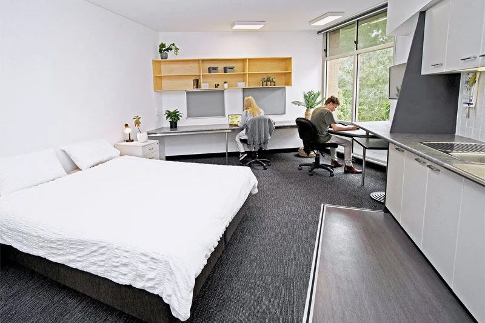
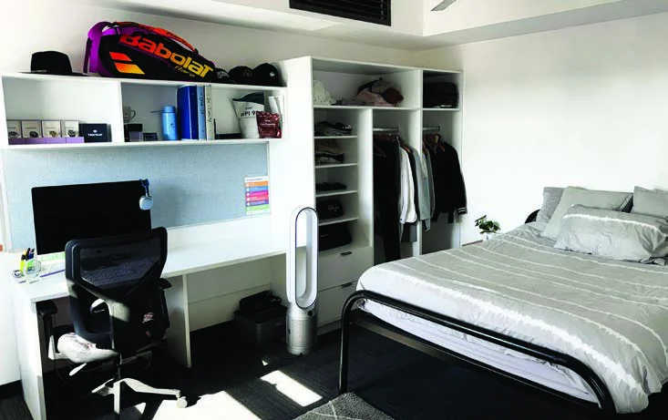
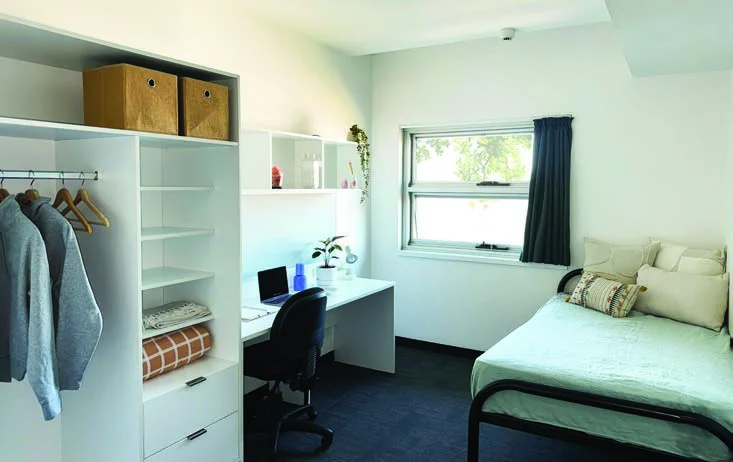
타워 공유 아파트의 공용 공간
아래 주방·거실·욕실 사진은 타워의 공유형 아파트 예시다. 바라히네반 스튜디오나 타워 1베드룸의 전용 공간과 헷갈리지 말자.
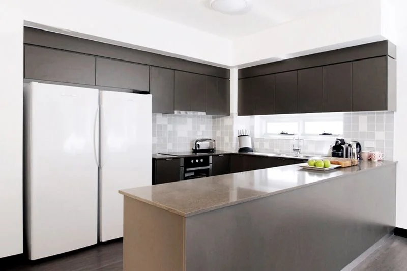
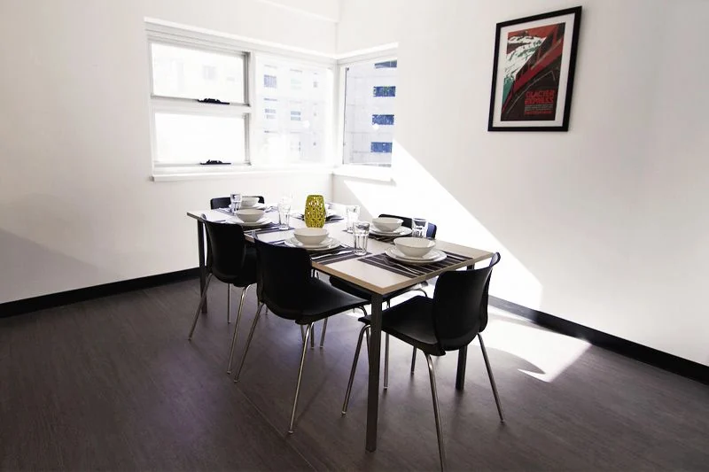
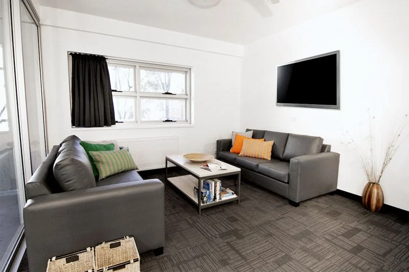
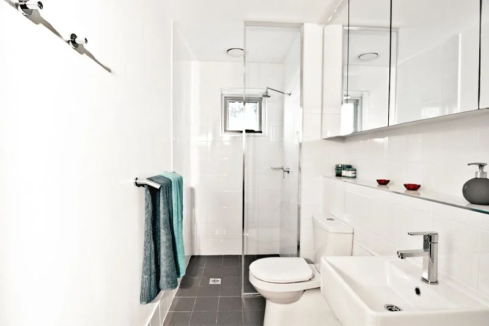
다른 기숙사 침실 사진도 보기
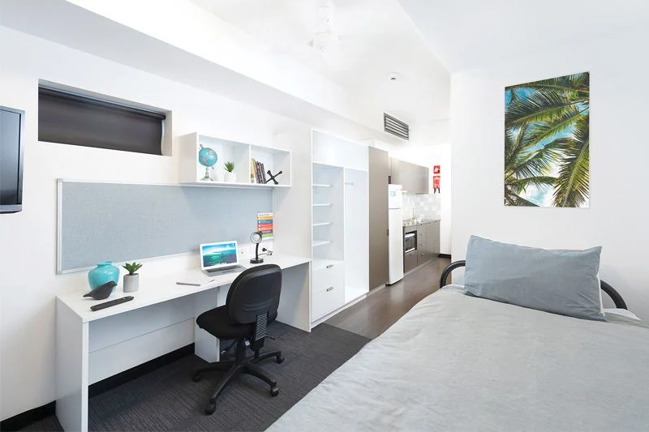
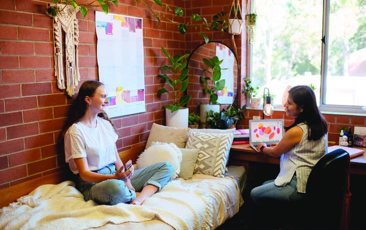
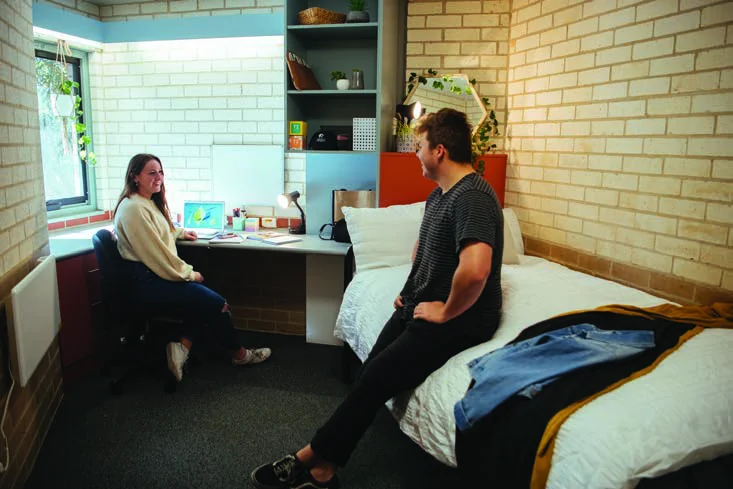
방 안을 직접 둘러보기
바라히네반 공식 3D 투어에서는 사진에 안 나온 전용 욕실과 취사 공간을 다른 각도에서 볼 수 있다.
2027년 한 학기 요금 비교
2027년 Semester 1 신규 입주 계약(2월 6일~6월 6일, 120박)을 계산 예시로 썼다. 주당 요금에 120/7을 곱하고, 신청비 A$100과 한 학기 커뮤니티비 A$300을 1인마다 더했다. 보증금은 아래에서 따로 계산했다. 2028년 요금은 아직 발표되지 않아 확정하지 않았다.
| 유형 | 방·주방·욕실 | 1인 / 주 | 한 학기 숙소비 1인 / 둘 |
|---|---|---|---|
| Barahineban · 스튜디오 2인 입주 | 침실·주방이 한 공간, 별도 전용 욕실. 커플용 킹 침대 1개 또는 트윈용 킹 싱글 2개. 냉방, 취사대, 냉장·냉동고, 컨벡션 전자레인지. 2인 입주 전체 96실이라는 뜻은 아님. | A$245.72 | 1인 A$4,612.34 둘 A$9,224.68 |
| North/South/East/West · 1베드룸 2인 입주 | 침실이 거실과 분리되고 둘만 쓰는 주방·욕실. 공식 사진 예시는 퀸 침대 1개, 배정 방에 따라 침대 사양 확인. 2025 안내서 예시 47㎡. | A$285.05 | 1인 A$5,286.57 둘 A$10,573.14 |
| Edwards Hall Self-catered · 공유 아파트 개인 침실 | 최대 5명 아파트의 개인 침실(싱글 침대), 공용 주방·거실·혼성 욕실. 기본 식사 미포함. | A$269.71 | 1인 A$5,023.60 둘 A$10,047.20 |
| International House · 공유 아파트 개인 침실 | 5·6·10인 공유 아파트의 싱글 또는 킹 싱글 침실, 공용 주방·욕실·거실. | A$279.56 | 1인 A$5,192.46 둘 A$10,384.92 |
| North/South/East/West · 2베드룸 아파트 개인 침실 | 킹 싱글 침대가 있는 침실 각 1개, 주방·욕실·거실은 두 침실 입주자끼리 공유. 안내서 예시 침실 11㎡·아파트 77㎡. 두 사람 모두 같은 아파트에 배정되어야 둘만 사용 가능. | A$385.63 | 1인 A$7,010.80 둘 A$14,021.60 |
자료: 2027 룸별 주당 요금 및 포함 서비스 · 2027 신규 신청 가이드 pp. 2–6 · 신청비·보증금·선납·커뮤니티비·침구 · 바라히네반 시설·공식 사진·3D 투어 · 타워 방 구성·공식 실내 사진·3D 투어
공식 요금에는 전기·수도·와이파이와 안내된 청소·보안 서비스가 들어 있다. 기본 가구가 있어도 침구·식재료·조리도구는 따로 챙겨야 할 수 있다. 위 표의 취사형 방에는 식사비를 넣지 않았다. 저녁이 포함된 Edwards Main Hall과 Edwards Self-catered(취사형)는 서로 다른 상품이다.
공식 방값 표는 GST를 뺀 금액이다. 계약상 세금이 붙는 항목에만 더하기 때문에 방값 전체에 일괄적으로 10%를 붙이지 않았다. 최종 오퍼의 세금·카드 수수료는 계산기의 예비비로 조정한다.
다른 방 요금도 보기
| 유형 | 구성 | 2027 단일학기 1인 / 주 |
|---|---|---|
| Evatt House 공유 아파트 개인 침실 | 킹 싱글 침대, 공유형 주방·욕실. 독립형 flat과 다른 요금. | A$305.17 |
| North/South/East/West 5·6베드룸 공유 아파트 개인 침실 | 킹 싱글 개인 침실, 공용 주방·욕실·거실. 같은 집을 요청해도 다른 입주자가 함께 살 수 있음. | A$337.17 |
| Barahineban 스튜디오 1인 | 혼자 쓰는 주방과 욕실. 2명이면 스튜디오를 각각 계약. | A$413.06 |
| North/South/East/West 스튜디오 1인 | 침실·취사공간을 분리하지 않은 독립형. 전용 욕실. 2025 공식 예시는 킹 싱글 침대. | A$434.09 |
| North/South/East/West 1베드룸 1인 | 혼자 쓰는 별도 침실과 주방·욕실. | A$513.64 |
| International House 독립형 flat 1인 | 공유 아파트와 다른 독립형 요금. 1인 기준, 2인 등록 옵션은 확인되지 않음. | A$358.20 |
| Evatt House 독립형 flat 1인 | 공유 아파트와 다른 독립형 요금. 1인 기준, 2인 등록 옵션은 확인되지 않음. | A$385.63 |
| Edwards Hall Main Hall 기본 개인 침실·저녁 포함 | 싱글 침대, 공용 간이 주방과 혼성 욕실, 저녁 식사 포함. | A$379.64 |
| Edwards Hall Main Hall 개인 침실·전용 욕실·냉방·저녁 포함 | 기본 Main Hall과 별도 유형. 저녁 식사 포함. | A$436.13 |
신청·룸메이트·방문 규정
교환 한 학기
공식 FAQ에 따르면 한 학기만 다니는 학생은 Single Semester(한 학기) 계약을 고를 수 있다. 학번이나 뉴캐슬대 합격통지가 나오기 전에도 기숙사 신청은 할 수 있지만, 계약을 시작하려면 원칙적으로 입학과 유효한 학번이 필요하다. 신규 안내서는 입주 후 28일 안에 수업을 시작하고, 사는 동안 실제 수강 중인 과목을 최소 10 units 유지하라는 조건을 둔다. 이 조건은 교환학생 수강량 조건과는 별개다.
자료: 교환학생 한 학기 신청과 룸메이트 신청 · 2027 신규 신청 가이드 pp. 2–6 · 2027 기숙사 입주계약 §§5, 8–13, 33–35
둘이 한 침실
두 사람이 각자 포털에서 신청하고 각각 A$100을 낸 뒤, dual occupancy 항목에서 서로를 지명한다. 문서에 친구와 파트너가 모두 적혀 있어서 결혼한 사이일 필요는 없다. 다만 특정 관계나 성별 조합으로 배정해 주는지, 2028년 방 수와 배정 확률, 교환학생이 아닌 동행자가 정식으로 입주할 수 있는지는 확인되지 않았다. 둘 다 교환학생 자격으로 신청하는 경우를 기준으로 한 설명이다.
자료: 교환학생 한 학기 신청과 룸메이트 신청 · 2027 신규 신청 가이드 pp. 2–6 · 2027 기숙사 입주계약 §§5, 8–13, 33–35
같은 집에서 각자 침실
같은 기숙사(residence)에서 각자 오퍼를 받아 수락한 다음, 같은 집 배정(housemate request)을 요청하는 방식이다. 2베드룸이라고 해서 두 사람이 집 하나를 통째로 예약하는 게 자동으로 되는 건 아니다. 같은 단지 요청과 같은 아파트 요청은 다르다.
자료: 교환학생 한 학기 신청과 룸메이트 신청 · 2027 신규 신청 가이드 pp. 2–6
젠더/생활 환경
배정 환경에서 Single Gender(같은 성별끼리)를 고르면 남성·여성·이분법 밖 정체성 중에서 선택할 수 있다. 2027 규정은 이를 출생 시 지정된 성별이 아니라 본인의 정체성·표현 기준으로 설명한다. 같은 성별 배정은 공유 유닛 안에서만 적용되고 층 전체 규칙은 아니다. General(구분 없음)과 Quiet Living(조용한 생활)도 고를 수 있다. 방 유형·건물·계약 기간마다 남은 방이 다르고, 바라히네반은 공식 소개상 General과 Quiet만 있다. 성소수자 전용 동이나 특정 커플의 배정 보장은 확인되지 않았다.
자료: Callaghan 8개 기숙사와 배정 환경 · 2027 신규 신청 가이드 pp. 2–6 · 2027 기숙사 생활규정 §§4, 9, 11 · UON 형평성·다양성·포용 정책
게스트는 입주자와 다름
2027 규정 §9에 따르면 외부 방문객은 시간이나 머무는 길이에 관계없이 포털에 등록해야 하고, 따로 승인받지 않으면 오후 8시 이후엔 외부 손님 1명까지만 들일 수 있다. 다른 아파트·기숙사에 사는 사람도 '내부 손님'으로 본다. 자고 가는 손님은 만 18세 이상이어야 하고, 주중엔 최대 1박, 주말엔 연속 최대 2박까지이며, 본인 침실을 쓰고 같은 유닛 동거인의 동의를 받아야 한다. 시험 준비·시험 기간과 오리엔테이션 기간 등에는 외부 손님이 제한된다. 동행자가 이 규정을 이용해 한 학기 내내 같이 사는 건 안 된다. 최신 2027 §9에는 성별로 숙박을 제한하는 문구가 없으며, 2025 안내서에 있던 별도 규정은 최신판에 이어지지 않은 것으로 봤다.
동거인 중도 퇴실
공식 약관 §35에 따르면 2인 입주 중 동거인이 계약을 끝내면, 남은 사람은 그 사람의 퇴실일부터 1인 입주 요금을 내야 하고 보증금 차액을 요구받을 수 있다. 2027년 기준으로 바라히네반은 주 A$245.72→A$413.06, 타워는 A$285.05→A$513.64로 오른다. 중도해지와 환불은 그 학기 계약서를 확인하자.
자료: 2027 룸별 주당 요금 및 포함 서비스 · 2027 기숙사 입주계약 §§5, 8–13, 33–35 · 2027 기숙사 별도 요금·벌금표
계약 기간과 보증금
2027년 2학기 한 학기 계약 신청은 4월에 열릴 예정이라고 안내되어 있고, 정확한 입·퇴실일은 따로 확인해야 한다. Standard Stay의 두 번째 구간(8월 7일~11월 28일)을 한 학기 계약 기간으로 단정하지 않았다.
| 돈을 내는 시점 | 바라히네반 2인실 · 1인 기준 | 계산에 반영하는 방식 |
|---|---|---|
| 신청 때 | 신청비 A$100 | 반환되지 않는 비용 |
| 오퍼 수락 때 | 4주 보증금 A$982.88 + 2주 방값 A$491.44 + 커뮤니티비 A$300 | 보증금만 지출 합계에서 제외. 2주 선납 방값은 전체 방값에 이미 포함 |
| 신청~수락까지 준비할 현금 | A$1,874.32 · 계획환율 950원으로 약 178만 원 | 두 사람 약 356만 원. 한 학기 전체 비용과 별도 추가 비용이 아님 |
| 퇴실 뒤 | 보증금 정산·반환 | 미납·파손·청소비 등이 차감될 수 있으며 즉시 반환된다고 가정하지 않음 |
자료: 2027 기숙사 입주계약 §§5, 8–13, 33–35 · 2027 개별 계약서 요금 표 · 2027 기숙사 별도 요금·벌금표
교외 숙소와 신축 기숙사
단기 착지·며칠 차이
도심의 임시 거처 Nihon은 일반 1인실에 층 공용 욕실·주방을 쓰는 구조다. 공식 페이지는 성별로 나뉜 층을 설명하면서, 환경 항목에는 Single/Mixed Gender를 함께 표시한다. 국제교육원 안내로는 최대 90일까지 머물 수 있고, 방값은 문의해야 한다. 120박 한 학기 전체나 커플이 한 방을 쓰는 대안으로는 계산하지 않았다.
자료: 도심 Nihon 임시 거처 · 교외 임대 및 단기 숙소 지원 · University of Newcastle College of International Education · Nihon 최대 90일 안내
도심 신축 후보
Muloobinba House는 2027년 개관 예정인 도심 신축 기숙사로, 트윈룸과 스튜디오가 생긴다고 예고했다. 공식 페이지 그림은 완공 전 조감도·렌더링이다. 칼라한 기준 요금이나 교환학생 한 학기 계약·2인 입주 조건을 이곳에 그대로 적용할 수는 없다.
자료: 2027 도심 신축 Muloobinba House
Callaghan 증설
학교 공식 뉴스에 따르면 새로 짓는 450명 규모 기숙사는 2028년 Semester 2에 첫 입주 예정이다. 그래서 2028년 Semester 1(봄) 예산에는 넣지 않았다.
교외 대안
학교의 숙소 지원 담당(Accommodation Support Officer)에게 민간 단기 매물을 찾는 도움을 받을 수 있다. 교외 임대는 기숙사와 약관·공과금·기간·2인 입주 조건이 다르니, 실제로 단기 계약이 되는지 확인한 뒤 비교하자.
11. 한 학기 비용과 계산기목차로
바라히네반 2인 스튜디오의 2027년 한 학기 요금을 넣으면 계획 예산은 1인 약 1,488만 원, 둘이 약 2,976만 원이다. 1인당 예비비 255만 원이 들어 있고, 돌려받는 보증금(Bond)은 따로다. 처음에 보증금까지 마련해 둘 돈으로 보면 1인 약 1,582만 원, 둘이 약 3,163만 원이다.
환율은 호주중앙은행의 2026년 11월 6일 A$1 = 937.54원을 확인했다. 아래 기본 계산은 환전 여유를 두고 950원으로 했다. 실제 결제 환율과 수수료는 카드나 환전 방식에 따라 달라진다.
자료: 호주중앙은행 2026-11-06 1 AUD = 937.54 KRW
예산에 포함한 것
| 항목 | 1인 계획금 | 기준 |
|---|---|---|
| 숙소·신청비·커뮤니티비 | 약 438만 원 | 주당 요금 × (120박 ÷ 7) + A$100 + A$300 |
| 식비·일상 소모품 | 180만 원 | 120일 기준 약 A$111/주. 취사 중심 계획 |
| 왕복 항공 | 170만 원 | 계획값이며 실제 항공권 견적은 아님 |
| 비자·보험·부대비·교재 | 325만 원 | Non-Award 비자 A$2,050와 OSHC, 신체검사·서류·교재 등 여유를 함께 포함 |
| 교통·통신·정착 | 100만 원 | 대중교통·유심·초기 생활용품 계획 |
| 어학시험 | 20만 원 | DET 응시·재응시용 계획금. 확정 결제액은 아니며 학원비·교재비 별도 |
| 예비비·인상 여유 | 255만 원 | 여유 자금. 실제로 모두 소비한다는 뜻은 아님 |
| 합계 | 약 1,488만 원 | 단국대 등록금·큰 여행·환급성 보증금은 제외 |
숙소는 2027년 공식 요금과 의무 납부금으로 계산했다. 어학시험 계획금은 IELTS를 염두에 둔 70만 원에서 DET 응시·재응시용 20만 원으로 바꿨다. 다른 항목을 유지하면 이전 계산보다 1인 50만 원, 둘이 100만 원 줄어든다.
등록금·비자·보험을 중복 계산하지 않기
협정에 따른 교환학생(Exchange)은 뉴캐슬대 등록금이 면제다. 자비 유학(Study Abroad)용 수업료 A$8,475·A$11,300은 교환학생 예산에 넣지 않는다. 단국대 등록금은 따로다. 2026년 학교 표에는 inbound Exchange의 SSAF도 No charge(면제)로 나온다. 일반 국제학생의 A$373을 여기에 그대로 넣으면 비용이 부풀려진다.
2026년 7월 기준 Non-Award 학생비자 기본 신청비는 A$2,050이다. 두 사람 모두 자기 학생비자로 가는 경우라 각각 계산한다. 유학생 보험 OSHC는 체류·비자 기간에 맞춰 견적을 받는다. 2026–27 교환학생 안내의 한 학기 A$430~480은 참고치일 뿐 2028년 확정 견적이 아니다. 이 비용들은 위 325만 원 항목에 이미 들어 있으니 따로 더하지 말자.
자료: 교환 등록금 면제와 OSHC · 2026 교환학생 SSAF 미부과 · 2026년 7월부터 Non-Award 학생비자 기본 신청비 A$2,050 (Schedule 3) · UTS 교환학생 Non-Award 비용 A$2,050 확인 · 2026–27 교환학생 한 학기 OSHC 참고치
숙소를 바꾸면 얼마나 달라지나
| 숙소 시나리오 | 1인 전체 계획금 | 두 사람 전체 계획금 | 1인 환급성 보증금 |
|---|---|---|---|
| Barahineban 스튜디오 2인 입주 | 1,488만 원 | 2,976만 원 | 93만 원 |
| North/South/East/West 1베드룸 2인 입주 | 1,552만 원 | 3,104만 원 | 108만 원 |
| Edwards Hall Self-catered 공유 아파트 개인 침실 | 1,527만 원 | 3,054만 원 | 102만 원 |
| International House 공유 아파트 개인 침실 | 1,543만 원 | 3,087만 원 | 106만 원 |
| North/South/East/West 2베드룸 아파트 개인 침실 | 1,716만 원 | 3,432만 원 | 147만 원 |
커플 스튜디오 대신 Edwards 취사형에서 각자 1인실을 받으면 1인 약 39만 원이 더 든다. 둘이 한 집을 쓰는 생활과 각자 침실을 갖는 편안함을 놓고 비교해 보자. 타워 2베드룸은 1인 약 228만 원이 더 들고, 같은 아파트 배정도 따로 요청해야 한다.
직접 바꿔 보는 비용
숙소비는 호주달러(AUD)로, 나머지는 원화 계획금으로 입력한다. 환율을 바꾸면 숙소비·보증금·초기 납부금이 함께 바뀐다. 비자·보험 같은 원화 계획금은 실제 견적에 맞춰 직접 고치면 된다.
전체 비용에 보증금 4주분을 더한 금액을 '보증금 포함 준비자금'으로 보여 준다. 처음에 내는 숙소 납부금에는 보증금, 2주 치 선납, 신청비, 커뮤니티비가 들어가지만, 선납한 방값은 전체 비용에 이미 들어 있어 다시 더하지 않는다.
12. 단국대 선발과 지원 준비목차로
뉴캐슬대 입학 기준과 단국대의 교환학생 선발은 별개의 단계다. 뉴캐슬대 학부 방문학생 기준은 GPA 2.0/4.0 또는 그에 준하는 성적과, 대학에서 1년 이상 전일제로 공부한 경력이다. 이 기준을 채워도 단국대 모집 정원과 선발 기준은 따로 통과해야 한다.
| 파견 | 보관 공고에서 확인한 정원 | 해석 |
|---|---|---|
| 2026-2학기 | 최초 2명 → 2차 2명 → 3차 2명 | 후속 차수까지 두 자리가 유지된 기록. 두 명이 함께 지원할 때 참고할 만한 저경쟁 신호다. |
| 2027-1학기 | 최초 2명 | 2028년에도 같은 정원이 보장되는 것은 아니며 새 공고를 확인한다. |
위 숫자는 지원자 수나 최종 경쟁률이 아니라 모집 차수별 공고에 적힌 자리 수다. 인기 대학보다 선발 부담이 적었다고 볼 근거는 있지만, 지원자가 두 자리보다 많아지면 성적·가산점 경쟁이 생긴다.
지원 흐름
- 단국대 공고에서 파견 학기·정원·성적·어학 인정 시험을 확인하고 지원한다.
- 본교 선발과 추천 뒤 뉴캐슬대에 성적표·여권·어학 자료와 수강 희망 과목을 제출한다.
- 수강 사전 검토에 필요한 영문 강의계획서를 준비한다. 과목코드뿐 아니라 실제 수강 학기·캠퍼스·분반을 맞춘다.
- 입학 수락·보험·등록 확인서를 준비하고 기숙사 배정을 진행한다.
- 비자·항공·입주를 정한다. 두 사람의 숙소 확정은 각자 선발 결과와 별도로 확인한다.
현재 2026–27 공식 정보표의 뉴캐슬대 신청 마감은 Semester 1이 전년도 10월 30일, Semester 2가 그해 4월 30일이다. 단국대 교내 지원·추천 마감은 이와 별도로 정해진다.
현지 지원 마감일은 파견 연도 안내를 따른다. 보관해 둔 단국대 2026-2 자료에는 추천 4월 30일·신청 5월 30일이 있지만, 이걸 2028년 마감일로 옮겨 적지는 않았다.
단국대 자료와 후기의 확인 범위
모집 이력은 보관해 둔 「2026-2학기 파견 교환학생 선발대학 목록」 최초·2차 수정본·3차와 「2027-1학기 파견 교환학생 선발대학 목록(공지)」를 다시 읽어 확인했다. 어학·학점·기숙사 보장 여부는 단국대 2026-2 뉴캐슬 대학별 안내와 대학의 현재 안내를 대조했다. 이 가이드를 만들며 뉴캐슬 파견후기는 새로 보지 않았기 때문에, 생활 설명은 단국대 학생의 실제 경험담이 아니다. 개인 정보와 지원자 명단 원본도 공개하지 않았다.
자료: 뉴캐슬 학부 교환학생 지원 기준 · 단국대 국제처
13. 어학 준비목차로
한국 여권으로 뉴캐슬 학부 한 학기 교환을 준비한다면 듀오링고(DET)에 집중해도 된다. 2026년 11월 7일 공식 비자 서류 체크리스트 조회에서는 별도 영어성적 증빙이 요구되지 않았다. 대학 제출 기준은 총점 110 이상, 읽기·듣기·말하기·쓰기 각각 110 이상이다.
| 시험 | 대학 교환학생 안내 | 준비할 때 볼 부분 |
|---|---|---|
| IELTS Academic | Overall 6.0 · 각 영역 6.0 | 상담·심리 수업을 위해 읽기뿐 아니라 말하기·쓰기 최저점을 함께 올리는 준비가 필요하다. |
| Duolingo English Test | 총점 110 · 읽기·듣기·말하기·쓰기 각 110 | 개별 4영역 점수를 적용하며 통합 소영역 점수와 구분한다. 대학은 간소화된 학생비자 신청 대상 국가의 지원자에게 DET를 인정한다. |
| TOEFL iBT | 구 점수 표: 70 · R16/L16/S18/W21 | 단국대 보관 안내는 New TOEFL iBT 지원 불가를 표시한다. 새 시험은 점수 환산만으로 인정된다고 가정하지 않는다. |
| TOEFL ITP | 뉴캐슬 교환학생 인정 경로 미확인 | UPEI용 ITP 준비가 뉴캐슬 지원까지 자동으로 이어지지 않는다. |
한국 여권·뉴캐슬 비자 서류 조회 결과 · 2026-11-07
| 여권 국가 | Korea, Republic of (South) |
|---|---|
| 교육기관 | The University of Newcastle · CRICOS 00109J |
| 학생 구분 | none of the above (all other students) · 대학 교환은 Secondary exchange student 항목이 아님 |
| 조회 결과 | Streamlined · 서류 간소화 적용 |
| 영어성적 증빙 | 조회된 Documentary Evidence List에 영어능력 증빙 항목 없음 |
‘DET가 이민당국의 인정 시험’이라는 뜻은 아니다. 대학에는 DET를 제출할 수 있고, 이번 조합의 비자 서류 목록에서는 별도 영어시험 성적이 요구되지 않는다는 뜻이다. 2028년 실제 신청 때 체크리스트와 ImmiAccount 제출 목록을 다시 확인하고, 추가 증빙 요청이 있으면 그 안내를 따른다.
시험 선택
현재 확인한 한국 여권·뉴캐슬 대학 교환 조건에서는 비자 때문에 IELTS나 TOEFL을 추가 준비할 필요가 없다. DET 성적은 대학의 영어능력 요건을 충족하는 데 쓰고, 비자 신청에서는 이 조합의 간소화된 서류 기준이 적용된다. IELTS Academic 6.0(각 6.0)은 다른 학교도 함께 지원하려고 선택할 수 있는 대안이다.
준비는 공식 모의시험으로 영역별 출발점을 확인한 다음, 읽기·듣기와 함께 짧은 설명문 쓰기와 1~2분 말하기를 꾸준히 넣는 게 좋다. '좋아하는 수업 주제 설명하기', '연구 결과와 내 의견을 구분해 쓰기'처럼 실제 수업에서 쓸 연습과 묶을 수 있다. 목표 점수 직전에는 시간 제한과 실제 시험 환경에 맞춰 연습하자.
응시료는 비용 계산기에서 조정할 수 있다. 기본값은 DET 응시·재응시용 계획금 20만 원이며 확정 응시료 견적은 아니다. 비자용 시험 한 번을 추가한 금액이 아니며, 실제 결제액과 응시 횟수에 맞춰 바꾼다. 학원비·교재비는 따로 더한다.
자료: 교환학생 공식 영어 기준 · 2026/27 교환학생 정보표 · 영국문화원 IELTS 일정·응시료 · DET 공식 준비·응시 · 대학 영어능력 인정 규정 · 2026-03-26 시행 · 호주 정부 서류 체크리스트 · 체크리스트·추가 증빙 안내
14. 출국과 첫 주 생활목차로
비자·보험과 도착일
영어시험 준비는 13장 어학 준비의 한국 여권·뉴캐슬 조회 결과를 기준으로 한다. 현재는 비자용 시험을 별도로 준비하지 않는 계획이다.
한 학기 교환은 학위를 받지 않는 Non-award 과정으로 학생비자(Subclass 500)를 준비하는 길이다. 학교가 발급하는 CoE, 유학생 보험 OSHC, 여권, 그 밖에 신청자마다 요구되는 서류를 갖춘다. 두 사람이 같은 방을 신청하는 것과 한 사람을 비자 동반자로 신청하는 것은 다른 일이다. 각자 교환학생으로 가는 경우라 비자와 보험도 각자 계산한다.
학사력의 개강일보다 먼저 Welcome Week와 입주가 있다. 2027년 Semester 1 Welcome Week는 2월 15일부터로 안내돼 있다. 2028년엔 그해 안내와 예약한 숙소의 입주일을 맞추자.
공항에서 기숙사까지
시드니 공항으로 들어와 뉴캐슬로 이동하거나, 국내선으로 갈아타 뉴캐슬 공항으로 들어올 수 있다. 학교는 처음 오는 교환·Study Abroad 학생에게 A$20에 공항 픽업을 해 준다. 항공권과 숙소를 정한 뒤 도착 5영업일 전까지 신청해야 하고, 동행자도 각자 신청한다. '신청 접수' 메일과 실제 예약 확정은 다르니 구분하자.
처음 며칠에 필요한 것
기숙사 체크인 때 열쇠와 출입 방법, 침구·조리도구가 어디까지 제공되는지 먼저 확인하자. 호주형 콘센트 어댑터, 결제 카드, 휴대폰 데이터가 있으면 첫 장보기와 길 찾기가 편하다. 학생증을 만든 뒤 MyUni, Canvas, myTimetable(시간표 시스템)에 들어가 고른 과목과 실제 수업 분반을 확인하자.
도착하자마자 무거운 식재료를 한꺼번에 사기보다 침구·세제·며칠 치 식재료부터 사면 이동이 덜 힘들다. 자주 갈 슈퍼, 캠퍼스 정류장, 밤에 돌아오는 방법을 익히고 강의실도 미리 한 번 찾아가 두면 첫 수업 날 힘을 아낄 수 있다.
수업이 시작된 뒤
강의 녹화가 있어도 튜토리얼·실습·출석 평가는 따로 있을 수 있다. 첫 주에 과목 안내서(Course Outline)에서 평가 종류와 마감일을 찾아 달력에 옮겨 두자. 수강 변경 기간과 Census date가 지나면 과목을 취소할 때 비용·성적 불이익이 달라지니, 바꿀 과목은 초반에 정리하자.
자료: 호주 정부 학생비자 안내 · 대학 OSHC 안내 · Welcome Week · 교환학생 공항 픽업
15. 용어와 곁가지 설명목차로
- 칼라한 — Callaghan. 뉴캐슬대 본캠퍼스가 있는 교외 지역 이름이다. 도심에서 북서쪽으로 약 12km 떨어져 있다.
- Auchmuty Library — 칼라한 캠퍼스의 중앙 도서관이다.
- Shortland Building — 칼라한 캠퍼스의 학생 생활 중심 건물이다. 식당과 학생회 사무실이 있다.
- Bar on the Hill — 칼라한 캠퍼스 안의 학생 바 겸 공연장이다.
- NUspace — 도심 캠퍼스의 건물 이름이다. 무료 셔틀 이름에도 쓰인다. Newcastle City는 NUspace 하나만이 아니라 시내 여러 대학 건물을 묶어 부르는 이름이다.
- Civic — 뉴캐슬 도심 한가운데 지역 이름이자 경전철 정류장 이름이다.
- Honeysuckle — 뉴캐슬 도심 항구 쪽 수변 지역이다. 옛 철도·항만 부지를 새로 단장한 곳이다.
- Ourimbah — 센트럴코스트 지역에 있는 뉴캐슬대의 또 다른 캠퍼스다.
- myUni — 뉴캐슬대 학생 포털(앱·웹사이트)이다.
- Marketown — 뉴캐슬 웨스트에 있는 쇼핑센터다. Coles와 Woolworths가 들어 있다.
- 뉴캐슬 인터체인지 — Newcastle Interchange. 뉴캐슬 도심 서쪽에 있는 기차·경전철·버스 환승역이다.
- Hunter선 — 뉴캐슬에서 내륙의 헌터 지역으로 가는 근교 열차 노선이다.
- Trip Planner — 뉴사우스웨일스 교통청(Transport for NSW)의 공식 길찾기 서비스다.
- Opal — 뉴사우스웨일스의 대중교통 결제 시스템이다. 뉴캐슬의 경전철·버스·열차와 Stockton 페리에서 쓴다.
- Jesmond — 칼라한 캠퍼스 바로 옆 동네 이름이다.
- Woolworths — Coles와 함께 호주의 양대 슈퍼마켓 체인이다.
- International House — 칼라한 캠퍼스 기숙사 가운데 하나다.
- Nobbys Beach — 항구 입구의 등대 곶(Nobbys Head) 옆에 있는 해변이다.
- Ocean baths — 바닷물을 쓰는 해안 수영장이다. 일반 실내 수영장과 달리 날씨·파도·청소 일정에 따라 이용 조건이 바뀐다.
- Strzelecki Lookout — Memorial Walk가 시작되는 해안 언덕 위 전망대다.
- Stockton — 뉴캐슬 항구 북쪽 건너편 동네다. 페리로 몇 분 걸린다.
- Beaumont Street — 도심 서쪽 Hamilton 동네의 식당·카페 거리다.
- Circular Quay — 오페라하우스·하버브리지와 가까운 시드니 항구의 페리 터미널 일대다.
- Maitland — 뉴캐슬 서쪽 내륙의 헌터 지역 도시다.
- 헌터밸리 — Hunter Valley. 뉴캐슬 서쪽 내륙의 와인 산지다.
- Tomaree — Nelson Bay 근처의 국립공원이다. 해안 산 정상 전망대로 알려져 있다.
- NUSA와 UNSA — 옛 사진이나 자료에는 NUSA라는 이름이 남아 있다. 현재 학생회·동아리 자료는 UNSA로 찾는다.
- Ally — 성소수자를 지지하고 포용적인 환경을 만들기 위해 교육을 받는 구성원·네트워크를 뜻한다. 전문 상담자나 기숙사 배정 담당자와 역할이 다르다.
- AskUON — 뉴캐슬대의 학생 문의·신청 창구(온라인 포털)다.
- OSHC — Overseas Student Health Cover. 호주 유학생 의료보험이다. 여행자보험과는 별개이며 체류·비자 조건에 맞는 기간을 가입한다.
- Medicare — 호주 국민건강보험이다. 교환학생은 보통 가입 대상이 아니다.
- ACON — 뉴사우스웨일스의 대표적인 LGBTQ+ 건강 단체다. ACON Hunter는 헌터 지역 지부다.
- APAC — Australian Psychology Accreditation Council. 호주의 심리학 교육과정 인증 기관이다.
- Units — 뉴캐슬대의 학점 단위다. 보통 과목 하나가 10 units이며, 단국대 10학점을 뜻하지 않는다.
- Blended Learning — 온라인 학습과 정해진 교내 활동을 섞은 수업이다. 캠퍼스 튜토리얼·실습 등에 참석하므로 완전 온라인 수업과 구분한다.
- CoE — Confirmation of Enrolment. 입학 허가를 수락하고 필요한 절차를 마치면 발급되는 등록 확인서로, 학생비자 신청에 사용한다.
- Assumed Knowledge — 수업이 이미 알고 있다고 전제하는 배경 지식이다. 반드시 먼저 이수해야 하는 선수과목이나 특정 학위 소속 제한과는 다르다.
- Dual occupancy — 방 하나를 승인받은 두 명이 쓰는 형태다. 뉴캐슬 요금표의 dual 가격은 두 명 합계가 아니라 1인당 요금이다.
- Edwards Main Hall — 칼라한 캠퍼스 기숙사 Edwards Hall의 식사 포함형 방이다.
- GST — 호주의 부가가치세다. 세율은 10%다.
- Bond — 퇴실 때 방 상태 등을 정산한 뒤 돌려받는 보증금이다. 지출 합계와는 분리하되 처음 준비할 현금에는 포함한다.
- SSAF — 학생 서비스와 편의시설을 위한 부담금이다. 2026년 대학 표에는 inbound Exchange와 Study Abroad가 No charge로 분류되어 있다.
- Non-award — 뉴캐슬에서 별도 학위를 받지 않는 교환·방문 수학을 가리킨다. 학점은 본교로 옮길 수 있으며, 비자와 요금 분류에도 쓰인다.
- Welcome Week — 개강 전 신입·교환학생 오리엔테이션 주간이다.
- Canvas — 뉴캐슬대가 쓰는 온라인 강의 시스템이다. 강의 자료와 과제가 올라온다.
- Census date — 등록 과목을 취소할 때 비용·학적에 영향을 주는 기준일이다. 수업 시작일이나 수강신청 마감일과 같지 않다.
- Honours — 호주 학부 과정 뒤 또는 학위에 포함되는 심화 연구 단계다. 일반 학부 교환학생이 연구·임상 과목에 자동으로 들어갈 수 있다는 뜻은 아니다.
16. 자료와 확인 범위목차로
확인일은 2026년 11월 7일이다. 학사력은 2028년 공개본, 과목은 2025~2027년 Handbook, 숙소는 2027년 요금표를 기준으로 썼다. 비용 계산의 식비·항공·예비비는 계획용 가정이라 실제 청구 금액과 다르다. 본문의 작은 [숫자]는 출처가 아니라 용어 설명이다.
사용한 원문 목록 펼치기
- 대학 캠퍼스 안내
- 심리학 학위 2027
- Gender and Sexuality Studies 2027
- 사진 원문
- CC BY-SA 3.0
- 사진 원문
- CC BY-SA 4.0
- University of Newcastle 칼라한 캠퍼스
- 대학 뉴캐슬 캠퍼스 위치와 교통 안내
- 교환학생 팩트시트의 캠퍼스·이동 안내
- NUspace·칼라한 셔틀 운행 시간과 노선
- 학생용 전자레인지·정수 시설과 식사 안내
- 대학 The Forum 운동시설 안내
- 칼라한 Bar on the Hill 공연장 안내
- 사진 원문
- University of Newcastle 뉴캐슬 시티 캠퍼스
- NUspace 건물의 강의·학습 공간
- Honeysuckle의 Q Building과 교육 시설
- 시티 캠퍼스의 대중교통 정류장
- Visit Newcastle 도심·해안 생활권 안내
- 사진 원문
- 칼라한의 Warabrook역과 버스 안내
- Transport for NSW 뉴캐슬 인터체인지 노선
- 뉴캐슬 경전철 노선과 운행 시간
- Transport for NSW 공식 경로 검색
- Transport for NSW Opal 운임과 결제 안내
- NSW 대학생 교통 할인 대상
- 대학 국제학생 장보기와 국제 식품점 안내
- Jesmond Central Woolworths 매장
- International House 시설
- 선택형 저녁 식사 요금
- Marketown 쇼핑센터 입점 안내
- UNSA 무료 식품 및 점심 지원
- NUspace 무료 점심 행사 기록
- 사진 원문
- 뉴캐슬 시청 해변·해수 수영장 안내
- 뉴캐슬 시청 해변 순찰과 수영장 운영
- Visit Newcastle의 서핑 강습 안내
- 사진 원문
- 사진 원문
- 뉴캐슬 시청 오션 배스 시설 안내
- 시청 Bathers Way 해안길 안내
- 사진 원문
- 사진 원문
- CC0
- Newcastle Museum 관람 안내
- Newcastle Art Gallery 확장·재개관
- Queens Wharf–Stockton 페리 노선
- Civic Theatre Newcastle 공연 일정
- 대학 Conservatorium of Music 안내
- Visit Newcastle 뉴캐슬 라이브 음악 안내
- The Lock-Up 동시대 미술 공간
- 시드니행 Central Coast & Newcastle선
- NSW 광역 철도망과 Hunter선
- Visit NSW Maitland 여행 안내
- Visit NSW Morpeth 여행 안내
- Visit NSW 헌터밸리 교통 안내
- Visit NSW Pokolbin 포도밭과 명소 안내
- NSW 국립공원 Tomaree 방문 안내
- 2028년 공식 학사력
- 현재 수강·시험 일정
- 비교용 2027 초기 학사력
- 학사력 변경 안내
- 호주 기상청 뉴캐슬 Nobbys 장기 기후 통계
- 사진 원문
- 대학의 성별 다양성과 성적 지향 지원
- UNSA Equity Guilds와 Queer Guild 가입 안내
- AskUON 성별 항목 변경과 Queer Guild 연락처
- 2026년 UNSA Pride Week 행사와 캠퍼스별 장소
- UNSA Queer Officer와 Queer Guild 역할
- 지역 단체 Newcastle Pride의 행사와 소식
- Visit Newcastle 시내 행사 일정
- 대학의 캠퍼스별 LGBTIQ+ ALLY 찾기
- 대학 EDI의 LGBTIQ+ 지원 안내
- 대학 Student Name Policy 원문
- AskUON의 캠퍼스별 포용 화장실 방 번호
- 칼라한 캠퍼스 지도
- 대학 CAPS 학생 심리상담 접수 안내
- 대학 의료센터·국제학생 비용 안내
- NSW 국제학생 보건 안내 Pacific Clinic
- NSW 보건부 성건강 클리닉 목록
- ACON Hunter와 NSW 지역 LGBTQ+ 지원
- NSW 트랜스·젠더다양성 국제학생 보건 안내
- 공식 자료 1
- 공식 자료 2
- 공식 자료 1
- 공식 자료 2
- 공식 자료 1
- 공식 자료 2
- 공식 자료 1
- 공식 자료 1
- 교환학생 수강량·수업과 평가
- 온라인 수강 규정
- 혼합수업의 의미
- 2025
- 2026
- 2027년 공식 과목 설명
- 과거 강의계획서 1
- 2025
- 2026
- 2027년 공식 과목 설명
- 과거 강의계획서 1
- 2025
- 2026
- 2027년 공식 과목 설명
- 과거 강의계획서 1
- 2025
- 2026
- 2027년 공식 과목 설명
- 2025
- 2026
- 2027년 공식 과목 설명
- 과거 강의계획서 1
- 2025
- 2026
- 2027년 공식 과목 설명
- 2025
- 2026
- 2027년 공식 과목 설명
- 2025
- 2026
- 2027년 공식 과목 설명
- 2025
- 2026
- 2027년 공식 과목 설명
- 2025
- 2027년 공식 과목 설명
- 2026
- 2025
- 2026
- 2027년 공식 과목 설명
- 2025
- 2026
- 2027년 공식 과목 설명
- 2026
- 2027년 공식 과목 설명
- 2025
- 2025
- 2026
- 2027년 공식 과목 설명
- 2025
- 2026
- 2027년 공식 과목 설명
- 2026
- 2025
- 2027년 공식 과목 설명
- 2025
- 2026
- 2027년 공식 과목 설명
- 과거 강의계획서 1
- 2025
- 2026
- 2027년 공식 과목 설명
- 2025
- 2026
- 2027년 공식 과목 설명
- 2025
- 2026
- 2027년 공식 과목 설명
- 2025
- 2026
- 2027년 공식 과목 설명
- 2025
- 2026
- 2027년 공식 과목 설명
- 2025
- 2026
- 2027년 공식 과목 설명
- 2025
- 2026
- 2027년 공식 과목 설명
- 2025
- 2026
- 2027년 공식 과목 설명
- 2026
- 2027년 공식 과목 설명
- 2025
- 2025
- 2026
- 2027년 공식 과목 설명
- 2027 룸별 주당 요금 및 포함 서비스
- 2026 과거 요금·계약표
- 2027 신청 시작일
- 교환학생 한 학기 신청과 룸메이트 신청
- 2027 신규 신청 가이드 pp. 2–6
- 2027 기숙사 생활규정 §§4, 9, 11
- 2027 기숙사 입주계약 §§5, 8–13, 33–35
- 2027 기숙사 별도 요금·벌금표
- 2027 개별 계약서 요금 표
- 신청비·보증금·선납·커뮤니티비·침구
- Callaghan 8개 기숙사와 배정 환경
- 바라히네반 시설·공식 사진·3D 투어
- 타워 방 구성·공식 실내 사진·3D 투어
- Edwards Hall 취사형과 Main Hall 시설
- Evatt House 시설
- 2025 공식 기숙사 안내서 실제 사진·평면도
- UON 형평성·다양성·포용 정책
- 교외 임대 및 단기 숙소 지원
- 교외 주거 안내 및 입국 전 민간계약 주의
- 도심 Nihon 임시 거처
- 2027 도심 신축 Muloobinba House
- 2028년 2학기 입주 예정인 450침상 증설
- 2027 국제학생 안내서 내 2026 생활비 범위
- 교환 등록금 면제와 OSHC
- 2026–27 교환학생 한 학기 OSHC 참고치
- 2026 교환학생 SSAF 미부과
- 호주 학생비자 영어 증빙
- 2026년 7월부터 Non-Award 학생비자 기본 신청비 A$2,050 (Schedule 3)
- UTS 교환학생 Non-Award 비용 A$2,050 확인
- 호주중앙은행 2026-11-06 1 AUD = 937.54 KRW
- 공식 웹 자료 권리 및 사용 범위
- University of Newcastle College of International Education · Nihon 최대 90일 안내
- 교환학생 공식 영어 기준
- 단국대 국제처
- 2026/27 교환학생 정보표
- 영국문화원 IELTS 일정·응시료
- DET 공식 준비·응시
- 호주 정부 학생비자 안내
- 대학 OSHC 안내
- Welcome Week
- 교환학생 공항 픽업